Idyllic landscape. A stone house with a tiled roof rises among the mountains.
A gabled roof, surrounded by trees and snow. Smoke rising from the chimney.
The following sign appears over the image:
Outdoor Temperature: -2º
Indoor Temperature: 22º
INT. PYRENEAN HOUSE / LIVING ROOM - IN THE MORNING
The same room as before, but now everything looks different.
In the room there are people dressed in dark clothes, pants with
pockets, vests with the company logo, belts, gloves
work. They are OPERATORS who walk back and forth installing lights,
cables, etc.
They prepare the set, the cameras, connect the cables, charge the batteries,
They meticulously clean the lenses and filters, etc.
ELECTRIC (38), mustache and hair slicked back, is riding a
wall radiator, while taping a cable to the ceiling.
A creaking sound. The radiator comes loose from the wall and hits the floor, stabbing.
The corner of the radiator on the wooden platform. ELECTRIC falls to the floor.
Back. He writhes in pain.
The OPERATORS turn to see ELECTRICIAN on the ground and walk towards him
with the intention of helping him.
They pass by NATE (28), an athletic young man with long hair, clean-shaven and
tank top. He is standing in the center of the room and his gaze is not
It's not just a cause for concern, but for hatred.
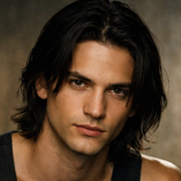
NATE
Get him up from there, damn it!
Nate angrily approaches the Electrician, despite being a head taller.
And at 10 years old, NATE speaks to the ELECTRICIAN with harshness and contempt.
NATE
How are you? Are you all right? Because that wooden floor is worth more than you.
Annual salary, honey. Literally more. Do you know how much of a deposit we paid?
For this house? Yes?
The ELECTRIC babbles.
NATE
Finish your fucking job and stop wasting my time. Move it!
You look like an NPC!
The electrician nods and turns to the rest of the operators.
NATE
This is the event of the year, queens! I want light, life, drama! Give it your all!
“Glow”, please, it looks like a Garci film!
Nate takes a sip from his personalized mug and observes a large
Poster of: MACREADY (40), muscular, mustache, rockabilly hairstyle, smile
seductive and wearing a tank top.
NATE'S eyes light up when he looks at the picture of MACREADY.
INT. PYRENEAN HOUSE / DRESSING ROOM - IN THE MORNING
The still image on the poster comes to life and becomes the real image of
MACREADY in front of the mirror, rehearsing, talking to himself.
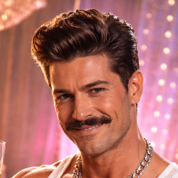
MACREADY
Princes and princesses… Welcome to the best Christmas Special.
It freezes.
MACREADY
Welcome to the best Special…
It locks again. He rinses his mouth, spits, and repositions his jaw.
MACREADY
Come on, honey. This is worse than premature ejaculation.
He stares intently again.
MACREADY
(Looking at each other)
Who is the prom queen?
NATE enters. MACREADY is startled.
MACREADY
Damn it, Nate! Don't just barge in!
NATE
Sorry Mac. I have the trailer ready...
MACREADY
I don't have time for that.
NATE
Don't you want to give the OK?
MACREADY
If it's not right, that's not my problem.
(Imperative)
Come closer! You must do something!
Macready throws him a red keychain. Nate catches it mid-air.
MACREADY
Go find those idiots.
NATE
Where? Don't they know how to get to Andorra?
MACREADY
They arrive in Puigcerdà by train. Lots of photos with Ferrari, but none of them know
drive.
NATE
I'll take care of it.
MACREADY
Great! You're in charge. And tell the team to leave at noon.
NATE
Are you sure?
MACREADY
I want to be alone before we begin.
NATE nods. He picks up a WOODEN BOX and stands before leaving.
NATE
This is going to be big.
MACREADY
You're number one. Let's get down to business.
NATE leaves and closes the door.
MACREADY returns to the mirror. He observes himself without blinking.
INT. BEDROOM / APARTMENT ANGELA RAW - IN THE MORNING
ANGELA RAW (29), slim, brunette, alternative, with short black hair, is
She wakes up in her bed already made up. The set is ready. Next to the bed, the
The mobile phone is mounted on a tripod, recording the escena. A little more
Removed, LED lights illuminate the escena and show us that everything is a
mounting.
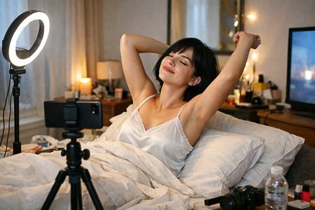
ANGELA RAW finishes stretching and looks at the camera with feigned sweetness.
INT. KITCHEN / ANGELA RAW APARTMENT - IN THE MORNING
ANGELA RAW prepares an impeccable breakfast. Everything is clean. Bright.
ANGELA RAW
Hello beautiful souls… To start the day with good vibes: something warm,
Something green… and something that makes you feel like you're taking care of yourself. It's a gift. And it burns fat.
She winks and holds a smile while looking at the camera.
Pause. Her smile disappears. She listlessly pushes her breakfast to the floor.
He places his elbows on the table and collapses. His hands support his head.
ANGELA RAW
How I miss churros.
INT. BATHROOM / ANGELA RAW APARTMENT - IN THE MORNING
Angela Raw posts the video. She stands in her underwear in front of the mirror.
She examines her belly, her waist, her buttocks. She pinches herself, searching for fat and
brays.
He takes a NICOTINE PATCH. He puts it on.
She starts brushing her teeth. The phone vibrates. CARAMELITO AUDIO.
CARAMELITO (OFF)
Wow, girl, I'm still blown away by that special. With Rudy Macready. I'm so
I'm dying! Look, you know I can't stand it, but I wish I were there. You're
She's a badass. Have you seen Max's "Stories"? Amazing!
ANGELA RAW stops brushing her teeth.
CARAMELITO (OFF)
The one who didn't want to get married, and now it's the wedding of the century. You did the right thing by leaving.
to that hypocrite.
Angela Raw picks up her phone and opens Instagram. She sees a happy couple.
They kiss with a "just married" sign.
ANGELA RAW
What a bastard!
INT. LIVING ROOM / APARTMENT JOSÉ FIT - IN THE MORNING
JOSE FIT (27), naked, lifts dumbbells in a “Biceps Curl”
in front of the television.
On TV, HIMSELF. Watching his own motivational video. JOSÉ FIT, T-shirt
wearing wide straps, shorts, muscular and with a thin mustache, positioned
In front of a Ferrari, recite your motivational text to the camera.
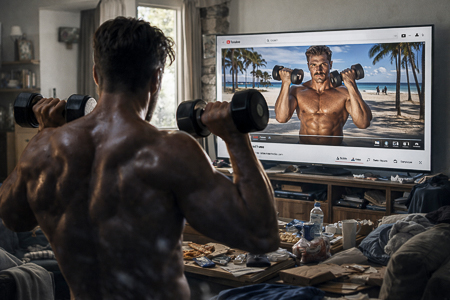
JOSÉ FIT (TV)
Today's effort builds tomorrow's warrior. Every repetition.
It counts. Discipline over motivation.
JOSÉ FIT pants. He sweats. He tenses up.
JOSÉ FIT (TV)
The pain is temporary. The victory is forever. There are no excuses. Not today.
nor ever.
He puts down the dumbbells and stands in front of a large mirror. He looks at himself.
Intensely, he touches his chest, his arm, his abs. He looks at his...
genitals. He nods contentedly.
Turn off the television.
INT. KITCHEN / JOSÉ FIT APARTMENT - IN THE MORNING
Supplement bottles fill the cupboards. The sink overflows with dishes and
Dirty glasses. Clothes are piled up on the floor.
José Fit picks up a t-shirt from the floor and smells it. He does the same with some...
underpants.
Place the oats in a bowl and add four fat-free yogurts from Mercadona.
She sits down to breakfast while mixing the bowl.
Your phone vibrates with a reminder about the CHRISTMAS SPECIAL. Turn it off.
reminder.
JOSÉ FIT
You're going to kill it, dude!
He hits his chest. The doorbell rings. He turns away, annoyed.
INT. RECEPTION AREA / LANDING - MORNING
JOSÉ FIT opens the door to the LANDLORD (40), wearing glasses halfway down his nose, a polo shirt and
The landlord hesitates before speaking.
JOSÉ FIT
What?
HOMEMADE
José… I'm sorry. Christmas is coming… I have to buy presents for the children.
And… I need you to pay me. That makes two…
JOSÉ FIT
You're looking at it the wrong way, mate. Neither of our lives will change.
months.
HOMEMADE swallows hard.
JOSÉ FIT
Who gives you the stability I do? Do you want to rent the apartment to
A loser who works at Zara?
HOMEMADE
José, I need the money.
JOSÉ FIT
I've signed with a huge company. Top protein. I can get you a couple.
Pots if you want. Free.
HOMEMADE
Why would I want that?
JOSÉ FIT
For your children… How old are they?
HOMEMADE
I'm not going to give my kids protein. Don't stress about it, José. It's nothing.
Personal. You know I follow you. I always like your posts. But…
The landlord looks at him seriously.
HOMEMADE
I'll give you a week. Otherwise, I'll post on social media about how you live.
José Fit glares at him.
JOSÉ FIT
What the hell are you saying?
The landlord takes a step back. They both look at each other. Silence.
HOMEMADE
One week!
Casero turns around to walk away and leaves down the hallway. José Fit
He begins to slowly close the door.
JOSÉ FIT
Give my regards to your wife.
José Fit slams the door.
INT. DRESSING ROOM / DIVA APARTMENT - NOON
THE DIVA (31), with an intense, defiant gaze, her hair dyed platinum blonde,
Wearing a low-cut top and silk robe, she shows some milk cans to the camera.
LA DIVA
Sixteen jars, honey. Sixteen. All labeled and numbered so that the
Dad, don't mess things up.
She holds two bottles of breast milk and smiles.
LA DIVA
And without losing this cleavage, what do you think! Well… tell me if I look like this
good.
The cries of a baby can be heard.
LA DIVA
I can do anything! I'm writing to you from Andorra. You guys are the best! Kisses,
kisses.
She blows kisses to the camera. She stops recording. She gets up energetically and
furious towards the door.
INT. LIVING ROOM / DIVA APARTMENT - NOON
The diva enters, throwing open the door. She glares furiously at her husband.
(36), tall and with a mustache, dressed in pajamas, holds a baby in his
arms.
LA DIVA
Can't you be quiet for a minute? You could hear EVERYTHING!
HUSBAND
Calm down.
LA DIVA
Are you calm? It'll make me look like a bad mother.
HUSBAND
God forbid. She's crying because she wants milk. Haven't you noticed?
The diva's robe is stained in the chest area. The milk has
soaked through the shirt and left a visible stain.
LA DIVA
I know she wants milk. That's why I got out all sixteen damn bottles.
Okay?
The diva sits in an armchair, shamelessly exposes her breast, and dries herself with
a piece of paper while she continues talking to her husband.
LA DIVA
You don't understand. Now everyone expects me to fail.
The baby starts crying again. The father tries to calm him down.
LA DIVA
(Altered)
Give it to me now!
The HUSBAND gives the baby into the arms of THE DIVA, who breastfeeds him.
LA DIVA
And one more thing. Next time you mess up a take, you'll have to take your boob out.
HUSBAND
Me, locked up, huh?
LA DIVA
Well, prove it. My boobs are going to end up looking like prunes. With that
They were beautiful, indeed.
HUSBAND raises his eyebrows.
HUSBAND
They still seem like…
LA DIVA
I know where you're going, and they haven't even finished quarantine yet.
HUSBAND
Man, almost… It's just that, seeing you like this.
LA DIVA
Don't be a pig. Grab your phone and take a picture of me for Instagram. I'm feeling lazy today.
adorably unbearable.
INT. UNCLE PACO'S HALL - NOON
An old living room cabinet filled with photos that summarize the
Uncle Paco's life (56), not thin, wasted away, with horn-rimmed glasses and
Metallica t-shirt.
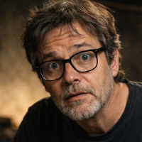
UNCLE PACO (OFF)
Are you sure you didn't throw it away?
MOTHER (78). The mother is ironing while smoking a cigarette, she takes a
“Gin and Tonic” and watch television.
MOTHER
Why would I throw anything away? I don't throw anything away. You would have done that when you married...
that tramp.
UNCLE PACO (OFF)
Mom, don't start… Isn't there a box of comics?
MOTHER
She kept your house. I'm calling her what she is.
UNCLE PACO (OFF)
She has given you a beautiful granddaughter.
MOTHER
She has blue eyes.
UNCLE PACO (OFF)
It is possible…
MOTHER
Like the gas delivery man.
UNCLE PACO (OFF)
Damn it, Mom! It's a recessive gene. Statistically, it's possible.
Uncle Paco appears with a comic book in his hands. He appears on television.
Javier Santaolalla.
UNCLE PACO
I've already found it.
MOTHER
Look at him. Now that's a scientist.
UNCLE PACO
Why? Because it's on TV?
MOTHER finishes ironing, unfolds the shirt in front of her son and gets ready.
MOTHER
Should I fold it for the suitcase?
UNCLE PACO
I'm only going for two days, Mom.
MOTHER
Bring your heavy coat. The temperature will drop. TV3 is right.
UNCLE PACO
Will you be okay without me?
MOTHER
You come back. In 56 years I haven't spent a Christmas without my son…
UNCLE PACO
What else… I don't get many opportunities like this. I don't want to spend another 5
years recording in the attic.
MOTHER
Shut up. Give me the shirt. I'll pack your suitcase.
Mother takes off Uncle Paco's shirt and leaves. Uncle Paco takes the remote and
Turn off the television.
INT. SALÓN SOLÉ - MEDIODÍA
Sole (35), dressed in boots, jeans, a white shirt, and a vest. She has the
She packs her suitcase and tries to zip up her boots. SALVA (41),
Short hair, "The Goonies" t-shirt. Trying to connect a PlayStation.
to the television.
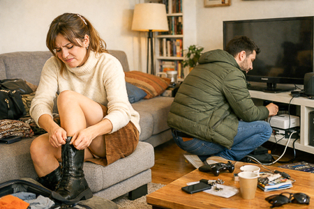
SOLE
(To the boots)
Close it, damn it! Shitty zipper. My ankles haven't gotten bigger.
So much so… right?
Look at SALVA. He fights with PlayStation cables.
SAVE
Put something else on. You're going to be sitting down anyway.
SOLE
No way. I've had them for ten years. Ten.
SAVE
Have you seen the “Euroconnector”?
SOLE
I don't even know what that is.
Sole manages to close her boots. She looks at herself in the entrance mirror and...
touch up your lips.
SOLE
I saw Vanessa the other day.
SAVE
Uh-huh. Which Vanessa?
SOLE
We chatted a bit, that's it. Fifteen years old. Two kids… He's still at the supermarket.
Can you ever imagine yourself with children?
Salva looks up and they stare at each other. It seems they are about to
They're about to connect and say something important.
SAVE
I could… I could use the antenna cable. I think I have one.
SOLE
How am I?
SAVE
Good.
SOLE
Not good. Tell me I'm going to kill it.
SAVE
You're going to kill it.
SALVA puts “Final Fantasy VII” on the video game console.
SAVE
I'll stay here. You go. Do your thing.
SOLE
And then what?
SAVE
Then… we'll see. I'll still love you even if you go back to the supermarket with Vanessa.
SOLE looks at him desolately.
SOLE
Okay. Calm down. Finish your stupid game. I'm not coming back. Not even to
“Mercadona”. Not even here.
Sole grabs her suitcase and leaves, slamming the door behind her. Salva, taken aback, looks at the
He shrugs and turns on the video game console.
SAVE
What did I say?
SALVA selects “NEW GAME”.
INT. BUILDING PORTER'S OFFICE - MIDDAY
OJOAVIZOR (46), bald, wearing a cap, sunglasses and a backpack, is leaning on
The wall. He puts a couple of pieces of chewing gum in his mouth and chews them.
compulsively. He spits the gum into his hand, kneads it, and sticks it on his hands.
the inside of a mailbox.
Goes out into the street.
EXT. STREET - NOON
The watchful eye looks from side to side as it walks. It behaves as if the
The FBI was after him. He pulls out a GoPro and starts recording himself.
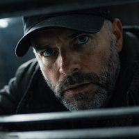
OJOAVIZOR
Keep a sharp eye out before they delete it. Christmas. Consumerism. Noise.
While they look at screens… others pull strings.
Some young people with cell phones walk past him. He avoids them, protecting himself.
as if they were trying to record him.
OJOAVIZOR
In Andorra, the mask falls. No more lies. No more puppets. The
The curtain of domination will fall… and with it, those who took me for a fool.
See you in the mountains.
Stop recording and put the camera away. A passerby walks by.
OJOAVIZOR
(To the passerby)
Excuse me, is this the station…?
The passerby walks past him without stopping or looking at him.
OJOAVIZOR
You scoundrel!
OJOAVIZOR adjusts his cap and starts walking down the street.
EXT. MOUNTAINS - IN THE AFTERNOON
Wide aerial shot through the mountains following the car. The music continues.
from the previous escena.
The following sign appears over the image:
Outdoor Temperature: -5º
Indoor Temperature: 22º
INT. NATE'S CAR (MOUNTAINS) - IN THE AFTERNOON
NATE drives, JOSÉ FIT and TÍO PACO are in the back and OJOAVIZOR is in the co-pilot.
JOSÉ FIT looks at his mobile phone, oblivious to the other three.
OJOAVIZOR shifts in his seat. He stretches his neck, moves his legs.
She glances at the others out of the corner of her eye, opens her mouth as if to say something but
close again.
OJOAVIZOR
What is this? Is it Catalan? Ugh.
WATCHFUL EYE abruptly changes the station. NATE looks at him.
OJOAVIZOR
I can't stand that shit.
NATE opens his eyes in disbelief. UNCLE PACO is speechless.
JOSÉ FIT
I'm telling you…
UNCLE PACO
Excuse me… what did you say?
NATE
Excuse me, but those comments are NOT appropriate on the show.
OJOAVIZOR
Why does it demonetize?
NATE changes the station. He puts the music back in Catalan. WATCH OUT
He switches again and they both struggle.
OJOAVIZOR
The co-pilot chooses. It's an unwritten rule.
NATE
Not in my car.
UNCLE PACO
Oh, God…
Uncle Paco looks ahead, is surprised, and suddenly.
UNCLE PACO
Watch out!
Nate looks ahead and makes a sharp turn of the steering wheel, and the car skids.
second.
OJOAVIZOR
Don't brake! If you see an animal, run it over!
UNCLE PACO
It wasn't an animal.
Uncle Paco turns around and sees two hikers waving. Uncle Paco looks at them.
surprised.
OJOAVIZOR
You idiots!
EXT. ROAD - IN THE AFTERNOON
The hitchhikers stop waving and turn around, smiling, to the car that
It's coming.
INT. SOLE CAR - AFTERNOON
Sole drives, La Diva is in the passenger seat. From the back seat, Angela Raw
check your ex-boyfriend's "Stories".
SOLE
Traveling by car always reminds me of when I thought I was going to be
someone.
ANGELA RAW frowns.
SOLE looks at her through the rearview mirror.
SOLE
That's why I left the band. I thought I was going to conquer the world.
LA DIVA
And here you are. You've done it, queen.
SOLE
Salva always supported me. Now he's only interested in the PlayStation.
ANGELA RAW
Well. Ten years of relationship… it takes its toll.
LA DIVA
No, darling. It doesn't matter how long you've been together. Passion is passion. It's not...
Time is laziness.
SOLE
Exactly.
LA DIVA
That's why they must be tied down. A child.
A mortgage. Something substantial. I call it extra security.
ANGELA RAW looks uncomfortable.
ANGELA RAW
(To herself)
And then they say love is free…
LA DIVA
Do you think people like you because you're natural? By the way… Your reach
It is decaying.
ANGELA RAW looks up in indignation.
ANGELA RAW
Excuse me?
LA DIVA
I don't want to say anything, but... you don't have the reach you used to. It's a
Done, darling.
ANGELA RAW
That doesn't matter to me. I share my life. I'm natural. People know that.
value.
LA DIVA
It's super natural to pout in selfies.
SOLE
Yes, it's perfectly natural to get up at five to do yoga in a bikini.
ANGELA RAW
You don't understand. Yoga is connection. Awareness. If I could, I would
I would do it naked.
SOLE
Yes, you can. On “OnlyFans”.
LA DIVA
(A Sole)
Well said.
(To Angela Raw)
Don't worry. We all know that bikinis get you followers. That's just how it is.
There is [something] because she is a woman.
ANGELA RAW
I don't sell my body. “Onlyfans” is the most degrading thing…
LA DIVA
We all sell it. Some show more. Others less.
SOLE
I'm also starting an "OnlyFans" account. Just feet. I think that's pretty popular.
There are a lot of fetishists out there.
LA DIVA
Sounds good. The feet work. You'll definitely kill it. That's how I started.
ANGELA RAW looks at her phone again, ignoring her colleagues.
SOLE
Are you going to pick it up again?
LA DIVA
What?
SOLE
OnlyFans. After pregnancy…
LA DIVA
No way.
ANGELA RAW also raises her head in surprise.
LA DIVA
Of course, Queens… I've billed more than ever.
INT. NATE'S CAR - IN THE AFTERNOON
We go back to the boys' car. José Fit tries unsuccessfully to load the
“Instagram” “Feed”.
JOSÉ FIT
The internet is crap. Nothing loads.
NATE
It's because of the mountains, darling.
OJOAVIZOR
The ski slopes definitely have coverage.
Uncle Paco, look outside.
UNCLE PACO
My mother said a strong front was coming. With this change.
climatic…
OJOAVIZOR
Your mother watches too much TV. There is no climate emergency. It's a
ridiculous invention to control sleeping people.
UNCLE PACO
The data doesn't come from TV.
OJOAVIZOR
The data comes from whoever pays.
NATE
Save those languages for debate. This isn't Twitter.
JOSÉ FIT
What if they close the road?
UNCLE PACO
Do we have enough food?
NATE
The village is nearby. If you run out of tobacco… you can walk.
The car keeps going up.
INT. PYRENEAN HOUSE / MACREADY ROOM - IN THE AFTERNOON
MacReady cuts some cucumber slices. He lies down on the bed and positions himself
Place cucumber slices on your eyelids. Cover your face with a towel.
He gropes for his mobile phone on the bedspread.
The wind blows through a window and some papers fall to the floor.
Macready takes out a cucumber to observe what happens.
He closes the window and looks around anxiously.
MACREADY
(Shouting)
Nate?
MACREADY is waiting to hear a response.
She picks up the papers from the floor. One slips out of her grasp and she has to walk over to get it.
Before picking up the paper, we see an image of La Diva. They look like dossiers.
with classified information, such as that provided by the CIA or a detective who
Investigate a case. Put the papers in a drawer.
Leaves the room.
The noise of cars arriving at the house snaps him out of his reverie.
The window shows cars parking outside.
EXT. PYRENEAN HOUSE - IN THE AFTERNOON
The cars are parked outside and people get out to get their
suitcases. They greet each other while taking some selfies.
Nate closes the trunk after handing over the last suitcases. He looks at his
Around, as if he were hearing something in the woods. The wind is blowing. NATE
Look at the sky.
Wide aerial shot of the house. The characters look like ants entering.
the house until a large gray cloud settles over it and covers the
image.
INT. PYRENEAN HOUSE / STUDIO - IN THE AFTERNOON
MacReady gets up from his chair. In the background, he sees all the characters.
Entering. Sound of suitcases, murmurs, kisses, hugs. Walk towards them
preparing to give their best show.
Turn off the light before you leave.
INT. PYRENEAN HOUSE / RECEPTION HALL – IN THE AFTERNOON
The diva smiles at José Fit. And looks around, impressed,
LA DIVA
Hi, honey… Wow. This is a great plan.
JOSÉ FIT
How are you?
José Fit extends his hand. The diva bows. He kisses her as if he were
In Gone with the Wind, the diva blushes and rolls her eyes.
José Fit smiles while continuing to look at her.
UNCLE PACO and ANGELA RAW offer each other passage before entering.
UNCLE PACO
Can I help you with your luggage?
ANGELA RAW
Thank you. I'm traveling light.
Sole looks at the house in amazement.
SOLE
What a huge house! Did the previous owners die a horrible death?
MACREADY appears on the escena.
MACREADY
Only some! The last one certainly won't be.
Everyone turns to look at him. He walks right past them.
NATE
In the end, someone always survives.
SOLE and NATE smile at each other.
The watchful eye enters last and closes the door.
OJOAVIZOR
(To himself)
Nice theater… Let the show begin!
MACREADY climbs a few steps but turns to answer OJOAVIZOR.
MACREADY
(Pointing at him)
Exactly, love. This is starting strong.
MACREADY stands in front of them as if to give them a speech.
MACREADY
Ladies, gentlemen… and fabulous creatures: Welcome to the best Special of
Christmas. But beyond thinking about "Likes" and "Followers," which are not
Don't forget the most important thing. You came here to shine. So now:
Relax. Rooms, shower, bubble bath if you like.
The diva takes out her phone and takes a selfie with José Fit. Sole also...
Get closer to them for the photo.
OJOAVIZOR
(To himself)
Yeah…
MACREADY
Before dinner, I'll show you the set. Our battleground. Tomorrow
Let's get started for real.
LA DIVA
Time for a shower?
MACREADY
Take a bubble bath if you want, queen.
The meeting ends. The group disperses.
JOSÉ FIT
(Pointing to THE DIVA'S suitcase)
Please.
José Fit offers to carry the diva's suitcase. And she's delighted.
LA DIVA
What a gentleman.
SOLE
Will anyone offer to carry mine?
NATE approaches Sole.
NATE
I'll help you.
SOLE lifts the suitcase to give it to NATE.
MACREADY
Nate! Come here.
NATE
It's a minute.
MACREADY
She can do it on her own. She's got more muscle than you.
MACREADY walks past SOLE and they look at each other.
MACREADY
Don't take it away from me.
MACREADY is leaving.
SOLE and NATE look at each other.
SOLE
Someone's carrying you by the pocket.
MACREADY (OFF)
Nate?
NATE shrugs. And they each go their separate ways.
SOLE
(To herself)
I will save you.
SOLE carries her suitcase up the stairs.
INT. ANGELA RAW ROOM - NIGHTFALL
Angela Raw enters her room. She leaves her backpack on the bed. She places
a stone, a bracelet, a small makeshift altar.
INT. JOSÉ FIT ROOM - NIGHTFALL
José Fit carefully takes out the food containers, while counting them.
and place it on a dresser. The label clearly indicates day and breakfast.
lunch or dinner. Just when it seems like it's ready, he starts pulling out cartons of
eggs.
INT. SUNNY ROOM – NIGHTFALL
SOLE manages to take off one of her boots and throws it.
SOLE
God, I'm going to throw those damn boots in the trash.
Grab the other one and pull hard. When you pull it out, it's exhausted and lies down on the
Bed. Bring your chin to your chest to see your feet.
SOLE
Bring your toes together…
SOLE wiggles her toes, curling and stretching them.
INT. ANGELA RAW ROOM - NIGHT
Angela Raw takes out her phone and checks her ex's profile. There's a video.
More from the wedding. The bride and groom are enjoying themselves, hugging and kissing.
Open WhatsApp and start a conversation with Agustín. Send a message of
audio. He walks around the room while speaking.
ANGELA RAW
Well Agustín, I've heard the "super news". I saw what happened to the
wedding.
(Pause)
Congratulations, really. Everything has been so… fast. I just wanted to tell you that
I'm happy for you. Although… you know. We didn't break up that long ago. And yes,
I still think about you sometimes. Quite a lot. You were… you are… a very special person
For me. I don't want to make anyone uncomfortable, I know, it's complicated right now… but I would like to
Let's see each other sometime. Whenever you can.
(Silence)
I don't know, I guess... when I saw the "Stories" I thought: "that could have been
"It was me." That's all. Hugs.
She sends the message. She sits motionless. The phone screen...
Turn it off.
INT. SUN-HOME ROOM - NIGHT
SOLE, rubbing a pumice stone on her heel, also sends a message
audio to Salva.
SOLE
Well, that's it, I've left. Three and a half hours in the car to get to the damn place.
Top of this damn mountain… and not a single fucking message from you. Not one.
(Imitating it)
How are you, Sole? Did you arrive safely?
(Your normal tone)
That's life, isn't it? Oh well. I wonder which of your three P's you're in.
Now: game, masturbation, or pizza. Relax, okay? You have the whole weekend.
week.
She sends the audio and looks at herself in the mirror, reassuring herself.
INT. UNCLE PACO'S ROOM – NIGHT
Uncle Paco makes a video call with his mother.
UNCLE PACO
Mom, where's the kangaroo's sweater?
MOTHER
That sweater is awful. It makes you look older.
UNCLE PACO
I wanted to put it on.
MOTHER
There was no room to put the polar fleece.
UNCLE PACO
The heating is on full blast and there's a fireplace.
MOTHER
The cold always comes.
While he is speaking, UNCLE PACO sees JOSE FIT walk down the hall, carrying with
their “tupperware”.
INT. LA DIVA BATHROOM - NIGHT
The diva, in a bathrobe, has everything ready to take a bath before the
Group dinner. Turn on the bathtub faucet. The water flows, creating foam.
The diva holds her phone in her hand, ready for a selfie. She looks at herself.
On her phone, checking the framing. She lowers her gaze and with a slight gesture
Open the neckline of the bathrobe.
LA DIVA
(Whispering)
“Mood” of the day: divine…
She takes a picture. She leaves her phone on the toilet very close to the bathtub, still
filling up.
INT. ROOM WATCHFUL - NIGHT
OJOAVIZOR takes “The Book of Enoch” out of his backpack and places it on the
nightstand. Then he takes out a pistol and places it on the nightstand as well.
bedside table. He looks at it for a moment and puts everything in the drawer of the
nightstand.
OJOAVIZOR turns around, as if reacting to the water in LADIVA's bathtub. He puts
attention to a painting.
The watchful eye takes the picture down from the wall and looks, frowning,
as if he expected to find something behind it.
INT. LA DIVA BATHROOM – NIGHT
The diva undresses. The mirror fogs up and the diva becomes a stain.
blurry.
INT. ROOM WATCHFUL - NIGHT
OJOAVIZOR is disappointed; there's nothing on the wall. He puts the... back up.
picture on the wall.
Behind the painting is written “DIE BASTARDS”. The last R of the
The word "Morir" is crossed out and replaced by a "D".
INT. ANGELA RAW ROOM – NIGHT
ANGELA RAW tries on various items of clothing in front of the mirror, putting them on.
In front of her, held with a hanger, without actually hanging them up. Alternating
Amidst various garments, her body is fleetingly revealed. ANGELA RAW
He stares intently into the mirror, cracked in one corner.
INT, HALLWAY – NIGHT
JOSE FIT piles the "tuppers" on top of NATE, who looks at them in surprise.
NATE
Wow… that's great. They're numbered by date.
JOSÉ FIT
They're not dates. They're calories.
NATE
If you get the order wrong…
José Fit looks at him seriously, without humor.
JOSÉ FIT
Thank you.
NATE
You're welcome. Queen of fitness.
NATE leaves with the “tuppers”.
JOSÉ FIT returns down the corridor and sees OJOAVIZOR trying to look through the hole
ajar the door of another room. The watchful eye disguises itself as being
discovered and JOSÉ FIT passes by.
OJOAVIZOR
What's up, mate?
JOSÉ FIT
Colleague?
They exchange a defiant glance and walk away. José Fit enters his
room without taking their eyes off him.
INT. SUN-HOME ROOM - NIGHT
Sole gets ready in front of the mirror. She asks herself:
SOLE
Who's the best?
After saying this, he waits for a response. He leaves the room.
INT. KITCHEN – NIGHT
Nate opens the refrigerator door and starts putting away Jose Fit's food.
in the refrigerator. She closes the door and, unexpectedly, Sole is behind it.
She. Nate gets scared.
SOLE
Is all that yours?
NATE
No, darling, I eat very little…
SOLE touches his arm, NATE is surprised.
SOLE
Well, it's not bad. Is it for holding the camera?
NATE changes his tone, making the conversation more direct.
NATE
I exercise…
SOLE
Would you like something before dinner? A piece of fruit?
NATE
Well.
SOLE opens her eyes.
SOLE
Something quick…
SOLE and NATE will close the gap.
NATE
We can… look for something.
SOLE
And what kind of fruit do you like best? Sweet fruit like figs… or better
a rich banana with potassium?
NATE
The important thing is not to go hungry.
Macready's voice interrupts him.
MACREADY (OFF)
(Shouting)
Nate! I've been calling you for hours! Get everyone ready. In ten minutes
We had dinner.
NATE looks at SOLE and lowers his gaze.
SOLE
Is it always like this?
NATE
He always… needs me.
SOLE
Yes, I know… It doesn't surprise me.
Sole winks at him. Nate leaves. Sole puts the banana away from the kitchen.
and leaves.
INT. PYRENEAN HOUSE / DINING ROOM - AT NIGHT
They are all seated at a large table, illuminated by a warm light.
plates and commas in the middle.
LA DIVA
The midwife was amazed. I got my figure back before the baby lost her weight.
JOSÉ FIT
And what routine did you follow during your pregnancy? Cardio? Pilates? Fasting?
intermittent?
LA DIVA
Fasting, honey... I vomited half my pregnancy. It was awful. I don't know how to...
They want another one.
UNCLE PACO
You're right. One was enough for me. But children are worth it.
(Pause)
When they don't tell you to go to hell.
Uncle Paco shows Angela Raw photos of his teenage daughter.
UNCLE PACO
She says she wants to be like you.
ANGELA RAW
How cute. She just needs to believe it... and a good strategy.
A WATCHFUL EYE raises its glass.
OJOAVIZOR
I propose a toast. To…
LA DIVA
(Interrupts)
Have an unforgettable weekend!
Everyone's toasting, except José Fit. The diva is looking for him with her glass.
JOSÉ FIT
I don't drink.
LA DIVA
Well, toast with water, champ.
SOLE
Did you bring your own food?
JOSÉ FIT
I am in the definition phase.
OJOAVIZOR
I wouldn't trust this food either.
ANGELA RAW
We need to trust more… and adapt. As long as there are vegan options…
UNCLE PACO
A vegan diet is the healthiest and most sustainable.
OJOAVIZOR
I'm vegan. Well… “flexivegan”.
SOLE looks at him in surprise.
SOLE
“Flexivegan”? What the hell is that? Are you also a “flexihetero”?
Laughter from various parts of the table. OJOAVIZOR remains unfazed.
OJOAVIZOR
Exceptions can be made in both cases. Survival dictates.
ANGELA RAW
That's true. On my travels, I had to eat whatever they gave me.
SOLE
Where have you been?
ANGELA RAW
Amazon, Mongolia, Nepal. I spent 3 months in Polynesia… eating what
Those poor women prepared me with their own hands.
MACREADY intervenes.
MACREADY
Wait a minute, Angela. In Polynesia… for three months? We were right around that time.
We saw it in Miami. Didn't we?
Everyone is looking at ANGELA RAW, who is forcing a smile.
ANGELA RAW
Excuse me?
MACREADY
You say you were in Polynesia for three months… but that was right when
We met in Miami and I told you about the Christmas special. Am I wrong?
The atmosphere changes. Everyone is looking at her. Angela Raw tries to maintain the
smile.
ANGELA RAW
Well, maybe it wasn't three months... Time flows differently there.
MACREADY
(Cutting)
Yes, but your live streams didn't stop. Who was recording them?
ANGELA RAW
(Irrited)
Do you mind?
A gust of wind hits the windows. They fly open and a
A strong gust of wind enters the room.
LA DIVA
Oh, damn!
OJOAVIZOR
(Ironic)
Here we go again with cheap gimmicks.
The blizzard intensifies. The power goes out. Only the lights of the
mobiles.
MACREADY
(Authoritarian)
Nate!
OJOAVIZOR
(Excited)
It's well done! It looks real!
UNCLE PACO
Should I close the windows?
SOLE
This is not normal wind.
The dining room is bathed in blue lights and flickering patterns.
EXT. PYRENEAN HOUSE - AT NIGHT
Outside, everything is dark. The house is barely a shadow in the blizzard.
Inside the lights of the cell phones.
Through one of the windows, UNCLE PACO and ANGELA RAW trying
close it.
ANGELA RAW
(Shouting)
Hold her!
INT. PYRENEAN HOUSE / DINING ROOM - AT NIGHT
JOSÉ FIT joins TÍO PACO and ANGELA RAW to push the windows with the
shoulder. A final gust throws snow and dust in their faces before
The window slammed shut with a sharp bang. The three of them looked at each other, panting.
EYE WATCHER applauds.
OJOAVIZOR
What a sight... it even looks real.
NATE
(A Macready)
Was this… planned?
MACREADY
Ready? How on earth can it be ready if there isn't even a camera?
Recording?
SOLE
This wasn't in the script…
UNCLE PACO
Perhaps the differential was lowered.
MACREADY
(Authoritarian)
Nate! Fix that ASAP. To the basement. Now!
NATE
Me? My thing is cameras…
JOSÉ FIT
If necessary, I'll go down.
NATE
Good idea. I'll come with you and we'll record it. We might even make a really cool Story...
MACREADY turns to him with an icy expression.
MACREADY
No, I'll go down. You record me. That's what I pay you for.
The diva looks at her mobile phone.
LA DIVA
You're not going to make many "Stories"... No signal. Not even a bar.
(To herself)
Okay… stay calm… what else can you do?
Everyone checks their phones.
SOLE
Now it really looks like a horror movie. I wouldn't go down to the basement even if I were dead.
MACREADY
You just need to flip a couple of switches. You don't need "many"
technical knowledge" for that.
While they are talking, ANGELA RAW gets up silently. Her silhouette crosses
The room is dimly lit. Sole glances at her.
SOLE
Angela? Where are you going?
Angela Raw is unresponsive. She disappears behind a side door that leads to the
aisle.
SOLE
He's gone…
Nobody listens to her.
MACREADY puts his hand on NATE's shoulder.
MACREADY
Go get the camera.
She walks towards the back, the light from her phone flickering on the floor.
LA DIVA
Andorra. When did we decide to come to the asshole of Europe?
The wind continues to blow, seeping into the house.
INT. BASEMENT STAIRS - AT NIGHT
The lights from the cell phones draw circles of light on the steps that
They descend into darkness. Creaks with every step. Held breaths.
MACREADY goes ahead, flashlight in hand, with his "blue steel" gaze and his
Lips. The light vibrates with every step.
MACREADY
(Low voice)
Is this okay?
Facing him, NATE walks backward, holding the camera.
NATE
Very “dark”, lacks light… I can record you in a “Resident Evil” style.
MACREADY
Good idea.
They reposition themselves: NATE behind, camera in hand, on MACREADY's back.
Suddenly, a reflection. Something is moving in the background.
MACREADY
Have you seen that?
MacReady stops, shines his flashlight along the wall until he reaches the
corner. In the cone of light, for a second, something can be distinguished that
hides behind a corner: a leg, still a second before
disappear around the corner.
They both scream at the same time. They turn around and run.
rushing towards the stairs, pushing, stumbling, colliding with
The wall. Macready elbows his way to the front.
MACREADY
Let me through! I'm the star, darling.
MacReady quickly climbs the ladder. Nate trips and falls. He looks for the
flashlight. A hand appears in the darkness and grabs the phone. NATE throws a
I scream until I see it's Angela Raw. Macready peeks out from the top of the
ladder.
ANGELA RAW
(Laughing)
Did you record that?
NATE nods, still unable to speak.
MACREADY
Delete it immediately!
MACREADY goes back down the stairs.
ANGELA RAW
What a scare, huh? You look like two “Boy Scouts”.
MACREADY
I almost peed my panties.
ANGELA RAW
Since you were taking so long, I already checked the circuit breakers… nothing. They're not working. It must be
the outside line that feeds the house.
MACREADY walks past ANGELA RAW.
MACREADY
(To Nate)
Record.
MACREADY heads towards the electrical panel. NATE follows him, recording.
ANGELA RAW crosses her arms and watches them.
They both manipulate the switches. They turn them up. They turn them down. Nothing.
MACREADY
(Murmuring)
Nothing. The problem comes from outside.
MACREADY turns to NATE.
MACREADY
Someone will have to leave.
Nate swallows hard. They both stare at each other.
INT. PYRENEAN HOUSE / ENTRANCE - AT NIGHT
MACREADY, NATE, ANGELA RAW, JOSÉ FIT and TÍO PACO open the main door.
The doorknob turns. The metallic sound echoes throughout the house. As soon as they open the door
A few centimeters, a brutal gust of wind pushes the door open. The curtains
They rise like wings.
The Diva screams. Uncle Paco stumbles backward, tripping over a chair. Angela Raw
She tries to hold the door, but the wind pushes it back.
ANGELA RAW
I can't!
JOSÉ FIT jumps in to help, and pushes hard.
JOSÉ FIT
Push! Come on, push!
Several of them manage to close it. A dry CLAC. They all gasp. The
Snow particles float in the air, illuminated by mobile phones.
SOLE
(Choked by nervous laughter)
Okay… we're not going out. What if we wait until this is over?
MACREADY
It doesn't matter.
(Pause)
There was nothing for us outside either.
The wind roars again on the other side of the door.
INT. PYRENEAN HOUSE / LIVING ROOM - AT NIGHT
They are all on the sofas, illuminated by the flickering light of the
telephones.
OJOAVIZOR
(Perplexed, delighted)
We have to admit it… That blizzard, the blackout, the suspense… it's been
awesome.
(Smiles)
Bravo. Congratulations.
MACREADY
What are you talking about?
OJOAVIZOR
Come on, man. Everything's ready, right?
MACREADY
No. Save your energy. You can discuss whatever you want tomorrow.
The diva checks her mobile phone.
UNCLE PACO
Hopefully, everything will be back to normal tomorrow. Sleep will be best.
SOLE
Seriously? Sleep? Let's have a few drinks, shall we?
MACREADY
(Nodding to SOLE)
Exactly. You've got class. I've got a few bottles saved. Nate, honey,
Be good and go find them.
NATE
(Fearing the answer)
To the basement?
MACREADY
(Raising an eyebrow)
Of course. Where else?
NATE sighs resignedly and leaves, using his phone as a flashlight.
UNCLE PACO
(Shaking his head)
I'll pass. At my age, one wild night and then a week of wanting more.
hang me.
LA DIVA
I'd kill for a drink... but we have a show tomorrow. If I don't get enough sleep...
dark circles appear under the eyes.
JOSÉ FIT
I'm retiring too. Muscles regenerate better at night.
SOLE
This looks like a spiritual retreat.
ANGELA RAW
Meditating and relaxing is the best way to heal. Every night I do my
hypnotic audio, and before I even get to ten I'm already on Pandora.
MACREADY
(Speechless)
Okay. I'll take this opportunity to review the script.
He stands up, asserting his authority.
MACREADY
(Claiming)
Tomorrow we'll make the best Christmas program in history.
Everyone gets up and goes to their rooms. Sole is left alone.
SOLE
(Sighing)
Well, goodnight, cruel world.
Silence. NATE appears with two bottles of wine.
NATE
(Smiling)
Hey, has everyone left already?
SOLE
Not everyone…
NATE smiles at him.
MACREADY (OFF)
Nate!, I'll wait for you upstairs…
SOLE
Maybe next time. Your owner is calling you.
NATE
(Uncomfortable)
Yes… I'm coming.
NATE gets up, sighs, and leaves.
INT. PYRENEAN HOUSE / BEDROOM HALLWAY - AT NIGHT
The group disperses through the corridor, barely illuminated by their mobile phones.
Doors closing, whispers, latches clicking. Silence.
JOSÉ FIT walks alongside LA DIVA and points to a door.
JOSÉ FIT
This is yours.
LA DIVA
Wow. It took you a while to figure that out… champ.
JOSÉ FIT
I'm just trying to be nice.
LA DIVA
Don't get too excited…
The diva enters her room. José Fit stands still for a second and
She smiles to herself.
JOSÉ FIT
Better luck next time…
Before entering his room, JOSÉ FIT watches NATE come out of his
room with a wooden box in his hands. He heads towards the
MACREADY'S room.
JOSÉ FIT
(For itself)
Ass-kissers…
José Fit finishes closing the door. Nate stops in front of the door.
by MACREADY. Look up: SOLE is in the hallway.
SOLE
Nice box.
NATE remains still. She takes out her pants pocket.
SOLE
There are other pockets.
Nate remains silent. He looks at Macready's door, then at Sole, then at another.
He sees the door. Finally, he turns the knob and goes in.
INT. PYRENEAN HOUSE / MACREADY ROOM - AT NIGHT
The room is dimly lit by a lantern placed as
bedside lamp. The atmosphere is warm.
MACREADY, with her back to a large mirror, is wearing only one
She wears a thin t-shirt and silk trousers. She massages her neck.
NATE enters carrying a wooden box.
NATE
I'm here.
MACREADY
(Without looking at it)
Leave it and close it.
NATE puts the box on the bed and sits down next to MACREADY.
MACREADY
(Turning towards him)
My body isn't what it used to be… Too many interviews, too many
Live broadcasts, too many people giving their opinions…
NATE
Of course... the body takes its toll.
NATE begins the massage. MACREADY sighs with pleasure.
MACREADY
No, Nate. Not the body. Mediocrity. That weighs… Mmm… you have hands that could restore faith to even the least devout.
NATE squeezes. The oil slips, glistening in the orange light.
MACREADY
(Grunting, relieved)
That's it... right there. More pressure. Lower down.
Nate obeys. The sound of oil rubbing against skin. They look at each other.
the mirror: NATE, uncomfortable; MACREADY, enjoying himself.
MACREADY
Do you admire me, Nate?
NATE
Just enough to avoid losing my job.
MACREADY
That's sincerity. That's why we work. Each in their place. Me in front.
You're behind me. That way everything fits together.
Only the wet rustling of hands can be heard.
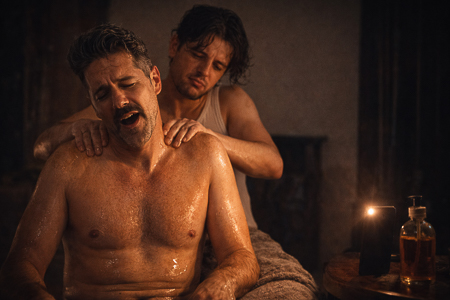
MACREADY
More oil.
MACREADY closes his eyes and smiles. NATE massages harder.
MACREADY
Continue.
Nate squeezes the oil can, releasing a stream that runs down the
MACREADY's back.
The oil drips onto the floor.
INT. PYRENEAN HOUSE / WATCHFUL ROOM - AT NIGHT
Absolute silence. The wind sounds distant. OJOAVIZOR lies in bed.
His eyes are open. His mobile phone is playing a voiceover.
VOICEOVER (OFF)
Each word will take you to a deeper state… Upon reaching ten
You will enter Pandora. One…
She sits up slowly. She takes her phone and turns on the flashlight.
She scans the room with her flashlight. She checks every corner.
He bends down and looks under the bed. Just dust. He gets up and opens the closet.
Nothing.
Point the flashlight at a corner of the ceiling: a small metal grate.
It's coming.
OJOAVIZOR
(Laughing)
I knew it!
He places the phone on a table. He climbs onto the chair, unsteady. His shadow
It projects itself enormously onto the wall, like a monster mimicking it. Its fingers
They graze the metal. He smiles, mesmerized.
OJOAVIZOR
(Ecstatic)
Eureka…
FADE TO BLACK
EXT. PYRENEAN HOUSE - DAWN
Absolute silence. The house is buried under a meter of snow, its
Windows sealed by a uniform white. The sky remains gray.
The following sign appears over the image:
Outdoor Temperature: -12º
Indoor Temperature: 16º
INT. PYRENEAN HOUSE / HOUSE - IN THE MORNING
The gray sun barely filters through the windows. Nate turns on the gas.
Click, click. Nothing. Try lighting a stove.
NATE
The stoves aren't working.
Uncle Paco tests a wall switch. Silence. Nothing.
UNCLE PACO
Nothing. No light, no heating…
LA DIVA
There's no hot water!
SOLE
My phone is almost dead.
UNCLE PACO
Without heating, the temperature can drop to zero in a matter of days or
hours.
NATE takes a power bank out of his pocket and offers it to SOLE.
SOLE smiles, extends her hand. Before she can take it, MACREADY bursts in.
setting aside the “power bank”.
MACREADY
Save it. Reserve it for emergencies.
Silence. Everyone is watching him.
MACREADY
(Sighs)
I don't want to alarm anyone, but… we're trapped.
A general murmur ripples through the group.
UNCLE PACO
Well… The important thing is to stay calm.
JOSÉ FIT
It's just snow. Don't make a big deal out of it.
ANGELA RAW
It won't snow forever.
Suddenly, CLAC. OJOAVIZOR places a spy camera on the table. Everyone sees it.
They look startled.
OJOAVIZOR
It was on the air conditioning vent. Right there, where nobody looks.
SOLE
And did you find it?
OJOAVIZOR
I look where nobody else looks.
OJOAVIZOR points directly to MACREADY.
OJOAVIZOR
I already congratulated you yesterday on your little stunt. I knew this was Big Brother.
MACREADY
Bullshit, bitch! A reality show? This sounds so cringeworthy. Wow
Nonsense. I can't control hurricane-force winds or snow.
OJOAVIZOR
Of course, the wind is fake. Industrial fans, fake snow, and BOOM!
mass hysteria.
MACREADY
Stop! We're caught in a real storm. Nobody's recording you!
OJOAVIZOR
That's what the person doing it would say.
SOLE
If there are cameras… someone is watching them.
JOSÉ FIT
Maybe the camera was to record one of the girls.
LA DIVA
Excuse me?
ANGELA RAW
That's harassment!
SOLE
How disgusting!
The diva advances towards Macready, and without warning, slaps him across the face with
a resounding slap.
MACREADY
What the hell…! Wait a minute! The camera isn't mine! This house is
It's rented out for film shoots. Anyone could have left it there.
ANGELA RAW
Please, let's not jump to conclusions.
Everyone is talking at once.
JOSÉ FIT
Let's not lose our heads.
ANGELA RAW
Okay, let's think about food. If there's no gas, we'll have to make a fire.
LA DIVA
I'm not spending another night here without a shower!
UNCLE PACO
If there's no heating, the temperature will drop. And if it drops too low, we'll...
We will freeze it.
MacReady watches the chaos, fascinated. He grabs Nate by the arm and drags him along.
towards a corner.
MACREADY
See? That idiot is right. This is gold! Real chaos, genuine fear.
If we can't record the special, we can record this.
He looks him directly in the eyes.
MACREADY
Do you have battery?
NATE
Yes, but…
MACREADY
Record everything, Nate.
NATE hesitates. He looks at the group arguing.
NATE
I don't know, this isn't right. People are scared.
MACREADY
So what? I invested fifty thousand euros in this special. I don't plan on going back.
Go home empty-handed. Record everything.
They both turn towards the group. Everyone is looking at him.
SOLE
What are you talking about?
MACREADY
Nate, get the cameras ready!
Nate looks at the group, at Macready. He sighs, gets up, and runs off.
OJOAVIZOR
I told you so.
UNCLE PACO
Enough of this nonsense! We need to get organized if we want to get out of here.
alive.
JOSÉ FIT
Get out alive? Hell, this isn't Last Survivor. It's just a
a little snow.
NATE reappears with the camera and starts recording.
LA DIVA
Oh no, no, no, no! Are we already recording? I look like a...
German tourist in Benidorm.
She takes off her robe and is left in a sparkly top. MACREADY looks at her from
He goes up and down and takes off his coat too, remaining in his t-shirt.
suspenders. JOSÉ FIT, looking at him, also takes off his sweater.
JOSÉ FIT
Well, I'm going to take this opportunity to make a video: Ten tips for getting into
Christmas and not stuffing yourself with shortbread.
LA DIVA
I love it! We can do it together.
SOLE
I'm in.
ANGELA RAW
I can light the fireplace. I've been to many campsites. I have
seen to do.
UNCLE PACO
Perfect, I'll help you.
The characters disperse throughout the house.
INT. PYRENEAN HOUSE / LIVING ROOM - IN THE MORNING
ANGELA RAW and UNCLE PACO finish piling up wood and papers in the
fireplace. It looks like something decorative.
ANGELA RAW
Look how beautiful it is. It's pure art.
UNCLE PACO
Okay. The elements are in place. Now we just need to turn it on.
ÁNGELA RAW takes out her phone and gets ready to record.
ANGELA RAW
Okay, turn it on.
Uncle Paco looks at her, bewildered.
UNCLE PACO
With what?
ANGELA RAW
Don't you have a lighter?
UNCLE PACO
Me? I don't smoke. I quit ten years ago. My wife thought I wouldn't be able to.
able.
Silence. Angela Raw turns to face the others in the room. Behind them,
José Fit has set up a makeshift gym. Sole is stretching with him.
a blanket over the shoulders.
ANGELA RAW
Does anyone have a lighter?
JOSÉ FIT
Smoking is for weaklings.
UNCLE PACO
We need fire, not tobacco.
JOSÉ FIT
It's related.
UNCLE PACO
Do you have a lighter?
SOLE
No… I only smoke after… occasionally. Lately, not much.
Enter THE DIVA. She's wearing tight sportswear. JOSÉ FIT looks up and
She walks in front of him, returning his gaze.
SOLE
Wow… For having given birth two months ago, you look amazing. “Amazing.”
LA DIVA
A month and a half, darling. So tough. Breastfeeding, crying, sleepless nights… But
There are priorities. The body is an investment, not a miracle.
ANGELA RAW
Yes, that's what motherhood is like.
JOSÉ FIT
Discipline.
SOLE
Well, I haven't been a mother, but at thirty-five I've lived my share.
UNCLE PACO
I imagine you don't have a lighter… I'm asking as a logical elimination.
LA DIVA
Please…
MACREADY and NATE enter the living room.
ANGELA RAW
Ah, great. Does anyone have a lighter?
MACREADY
I haven't smoked a cigarette in twelve years. I remember the last one perfectly.
Bangkok Airport…
UNCLE PACO
We need fire for the fireplace.
MACREADY nods.
MACREADY
Nate! Lighter! Don't you even have a few measly matches in that backpack?
NATE
No, no, I never…
UNCLE PACO
Well then, the only thing left to do is ask the weirdo.
INT. PYRENEAN HOUSE / BEDROOM HALLWAY - AT NIGHT
The watchful eye comes out of one of the rooms, looks to both sides in the
hallway and then goes into another room
INT. PYRENEAN HOUSE / LIVING ROOM - IN THE MORNING
MACREADY empties a bag full of various items onto the table.
MACREADY
Well. This is what it is.
SOLE
Perhaps something will be useful.
JOSÉ FIT
We're wasting our time.
NATE
We could try to make a radio. Or something “low-tech” that works.
UNCLE PACO
No, no… that's not going to work… For that we would need a circuit
amplifier, a coil… Parts are missing.
ANGELA RAW
Hey… There are electrical things in the car, right?
NATE
The car has a radio. We could pick up signals, call for help.
UNCLE PACO
Good idea. And maybe the battery will still work.
MACREADY
Perfect. Plan approved. Class, darling. Let's get to work.
They turn towards the window. Outside, absolute white. The blizzard lashes at the
window.
INT. PYRENEAN HOUSE / LIVING ROOM - IN THE MORNING
MACREADY, ANGELA RAW, NATE and UNCLE PACO see the car through the window
Buried in the snow. Their faces illuminated by the white light of the
abroad.
UNCLE PACO
The car is less than ten meters away.
NATE
Ten Impossible Meters.
MACREADY
We just have to go outside and walk to the car, that's it.
NATE
Walking out…?
MACREADY
It will be exciting. We're in Andorra, not on Mount Everest.
ANGELA RAW
Two people could leave.
MACREADY
Two people? One goes ahead, the other secures. We could go tied together.
UNCLE PACO
The most logical thing would be to leave through the window. It's less blocked.
NATE
You two could come out. I'll record from inside.
UNCLE PACO
Me? I'm a teacher, not a mountaineer. Besides, I have high blood pressure…
MACREADY
No. You're coming with me.
ANGELA RAW watches JOSÉ FIT, LA DIVA and SOLE stretching in the
lounge.
JOSÉ FIT (OFF)
Come on, girls! One, two, three… stretch and breathe!
MACREADY
History needs witnesses, Nate. And heroes. You don't record a miracle.
from the sofa.
The diva is in a plank position. José Fit is helping her with excess...
Closeness. He holds her hips, sliding his hands down her waist. They both
They look.
JOSÉ FIT
Breathe and hold it. Yes… That’s it… feel the muscle. Make it count.
LA DIVA
Is this okay?
JOSÉ FIT
Perfect. Keep it up.
Silence. SOLE observes them and raises an eyebrow.
SOLE
And are you going to help me?
ANGELA RAW, TIO PACO, MACREADY and NATE are still in front of the window.
ANGELA RAW
I'm going!
Nobody listens to her.
ANGELA RAW
(Higher)
I said I'll go!
NATE
What?
MACREADY
We weren't talking about that, Angela.
ANGELA RAW
Yes, but I'm here.
UNCLE PACO
Angela, this is… dangerous.
ANGELA RAW
I know exactly what it is. I've crossed deserts.
MACREADY
Crossing deserts in a jeep? I've had my share of experiences.
ANGELA RAW looks at him, offended.
JOSÉ FIT
Okay, girls! We've warmed up enough. Now let's get down to business.
The MUSIC starts.
ANGELA RAW looks at them and then looks at MACREADY.
ANGELA RAW
You heard it, girls. Let's get down to business.
MACREADY and ANGELA RAW lock challenging glances.
INT. PYRENEAN HOUSE / LIVING ROOM - IN THE MORNING
The diva claps her hands to mark the rhythm.
JOSÉ FIT
ONE, TWO, THREE...
SOLE moves listlessly but keeps time.
Uncle Paco places some ropes on the table, measuring the distance between
knots with surgeon's precision.
Angela Raw watches him, buttoning up a thick jacket, the gesture between
nervous and solemn.
NATE places a GOPRO on MACREADY's chest.
MACREADY ties a rope around his belt while continuing to look at ANGELA RAW,
who puts on ski gloves. She turns her head: she looks at the
Three from the back training.
The diva bends over while stretching.
JOSÉ FIT lifts weights; his sweat shines like snow.
Sole combs her hair with one hand while doing a slow squat.
JOSÉ FIT jumps rope, the rope whistles.
NATE wraps the rope around MACREADY's waist.
ANGELA RAW ties the other end of the rope.
MACREADY checks the rope knot.
MACREADY
Ready.
NATE
Ready to record!
MACREADY
This is going to be epic!
ANGELA RAW opens a window a few centimeters: a gust of wind
hits.
ANGELA RAW
(Looking outside)
Let's go.
INT. PYRENEAN HOUSE / LIVING ROOM - IN THE MORNING
ANGELA RAW and MACREADY are dressed in everything they could gather:
layered coats, scarves, hats, mismatched gloves, ski goggles.
They look like astronauts. You can hear the whirring of the wind and the soft tapping.
of the snow against the glass.
NATE looks through the camera. MACREADY prepares to open the window.
MACREADY
Okay, we'll open in three…
NATE
Give me a second.
Macready sighs. Angela Raw holds her breath. Uncle Paco is
ready by the window to close it.
UNCLE PACO
Am I bothering you here?
NATE
No.
ANGELA RAW
But, what about me?
NATE
Done.
MacReady pulls to open the window, but it barely moves. The ice
It keeps it sealed. He pushes harder and growls.
ANGELA RAW
Let me help you.
MACREADY
No, no. This… is mine.
MACREADY leans in with all his weight and pushes. A sharp crack, a thud of
Freezing air. Angela Raw pushes too, and the window bursts open. One
A gust of snow enters the room, covering the floor. The faces of
MACREADY and ANGELA are illuminated by the white light outside. They look at each other with
distrust. The silence is total.
MACREADY
(Smiling)
Here we go.
Macready comes out first, pushing with his arms. Macready's body
She disappears into the white. ANGELA RAW follows, crawling through the snow.
A blizzard engulfs them instantly. The figures are reduced to shadows.
that are lost behind the curtain of snow.
Uncle Paco tries to close the window. But it's stuck again.
JOSÉ FIT and closes the window with a sharp bang that cuts off the sound of
wind.
JOSÉ FIT
That's it. How annoying.
Uncle Paco looks surprised at José Fit, who slaps him on the
back.
JOSÉ FIT
Let me know if we need to open it again.
José Fit is leaving again with the girls.
EXT. PYRENEAN HOUSE - IN THE MORNING
MACREADY and ANGELA RAW crawl through the snow, hugging the ground.
The blizzard hits them violently.
Suddenly, she stops. She turns her head. In the distance, through the
Blizzard, see inside JOSÉ FIT, LA DIVA and SOLE moving
rhythmically. ANGELA RAW stares, mesmerized.
MACREADY
Angela! Keep going!
The scream snaps her out of her trance.
ANGELA RAW
(Shouting)
I'm coming!
She keeps crawling, digging her elbows into the snow. The wind pushes her along.
backwards, but she moves forwards.
MACREADY
Don't look! Concentrate!
Two tiny figures crawling across an endless white sea.
INT. PYRENEAN HOUSE / SOLE'S ROOM - IN THE MORNING
A watchful eye rummages through the drawers of the dresser. Beside him, through the
fogged windowpane, white silhouettes outside
The tiny figures of MACREADY and ANGELA RAW advance clumsily. OJOAVIZOR hits the
Standing in front of the glass, trying to make out her thoughts. Her breath fogs up again.
the glass.
EXT. PYRENEAN HOUSE / CAR - IN THE MORNING
The blizzard intensifies. Angela Raw and Macready struggle forward to the
Vehicles half-buried in snow. The rope connecting them drags between them.
They are like a red vein.
MACREADY scrapes the windshield with his sleeve. Together they clear some of the
door.
Macready pulls on the handlebars. She tries to help him; the two of them push the
once, slipping.
MACREADY
It's closed!
ANGELA RAW
Now what?
Macready turns toward the house. Nate, on the other side of the glass, holds
The car keys were held high, hanging from a red keyring.
MACREADY and ANGELA RAW look at each other, exhausted.
EXT/INT. PYRENEAN HOUSE - IN THE MORNING
MACREADY and ANGELA RAW are crawling through the blizzard again. The rope
It snakes through the snow, tense.
INT. HOUSE / BY THE WINDOW – IN THE MORNING
NATE and UNCLE PACO watch the shadows approach.
EXT. PYRENEAN HOUSE - IN THE MORNING
Macready and Angela arrive at the window covered in snow. They knock on the
glass with gloves.
INT. HOUSE / BY THE WINDOW – IN THE MORNING
Nate, without letting go of the camera, hands them the keys. MacReady snatches them away.
hand in hand.
Uncle Paco opens the window again. The wind fills the house. Angela and
MACREADY come out again. UNCLE PACO, shivering, leans against the frame and
close.
EXT. PYRENEAN HOUSE / CAR - IN THE MORNING
MACREADY inserts the key into the car lock. Turns. Opens the
They get into the car. They close the door.
INT. PYRENEAN HOUSE / DIVA'S ROOM - IN THE MORNING
From the window, Macready and Angela Raw can be seen getting into the car.
Silhouettes disappear behind the fogged-up windshield.
The watchful eye enters stealthily. His flashlight illuminates corners and objects.
Scattered clothes on a chair. He stops. A half-open door: the
bathroom. Push with one finger.
Inside: cold, white light. On the sink: a toothbrush.
perfume… and light-colored panties, damp, folded at the hem.
She stares at them, expressionless. She takes a step back, but stops.
He thinks. He slowly retraces his steps. He stands on the threshold.
Hesitant. He looks at the panties, then at his own reflection in the mirror.
OJOAVIZOR
Anything to pay the rent…
She takes out a crumpled zip-top plastic bag. She shakes it, opens it,
She positions it precisely and puts the panties in the bag. She seals the closure with
A soft sound: click. She looks in the mirror again. Her expression is a mixture of emotion and emotion.
shame and professional satisfaction.
OJOAVIZOR
Direct to “Wallapop”.
INT. PYRENEAN HOUSE / LIVING ROOM - IN THE MORNING
José Fit applauds with satisfaction. Sole is passed out with her tongue hanging out.
DIVA wipes the sweat from her forehead with a towel.
JOSÉ FIT
Great training, girls. You're fire.
SOLE
Yes… all for fame.
LA DIVA
Now a warm bath and then I'll sleep like queens.
Silence. SOLE is looking at him.
SOLE
Is there hot water?
LA DIVA
No…! I can't live like this.
JOSÉ FIT
Cold water activates circulation. It's good for the skin.
LA DIVA
I want foam, not hypothermia!
SOLE
You can always use wipes, like in the Middle Ages.
LA DIVA
I'll think of something.
She gets up dramatically and heads towards the bedrooms.
INT. PYRENEAN HOUSE / HALLWAY - IN THE MORNING
The diva advances with a firm step, wrapped in her workout robe, the
hair tied back. The watchful eye appears from the other end, walking with
His flashlight was on and he was carrying a plastic bag. They stopped.
They meet in the middle of the hallway. Their eyes meet. She arches a
Eyebrow, walks past him. Opens his bedroom door and enters. Watchful Eye
He remains still, staring at the doorknob for one more moment.
Then he looks both ways down the hallway, making sure he is alone.
Then he turns around and enters another room, closing the door.
carefully.
INT. CAR - IN THE MORNING
They both gasp, laughing nervously. Angela Raw takes off her gloves and...
He rubs his hands together. The steam fogs up the windows.
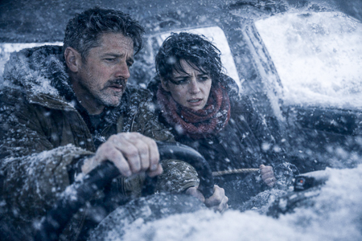
For a few seconds, only the sound of his breathing and the
wind hitting the roof.
MACREADY
(Panting)
Okay… you get the lighter, I'll get the radio. Team diva.
ANGELA RAW
Done.
ÁNGELA RAW picks up the car lighter, but it's a lipstick.
ANGELA RAW
And the lighter?
MACREADY looks around, confused. He shrugs.
MACREADY
I guess nobody smokes anymore… what a boring world.
ANGELA RAW lifting the piece of plastic.
ANGELA RAW
And the radio?
MACREADY points to the dashboard, a large screen, a console full of
touch buttons, and lights off.
MACREADY
There used to be a little wheel and two buttons… and it played music. Now they're like
spaceships, incapable of flying.
Silence returns.
INT. PYRENEAN HOUSE / MACREADY'S ROOM - IN THE MORNING
A watchful eye methodically searches through the drawers of a desk. He closes a
drawer. Open another. Nothing. Notice a piece of cardboard peeking out between two
folders. He pulls it out carefully. He places it on the table and looks at it.
instant.
OJOAVIZOR
(Whispering)
Come on, baby... give me something.
Open the folder. Inside: printed sheets, handwritten notes, a photo
folded. She begins to flip through it quickly. She holds up a page to the light of the
lamp, as if checking its authenticity.
OJOAVIZOR
(Amazed)
Oh, Mom...
INT. PYRENEAN HOUSE / CAR - IN THE MORNING
MACREADY turns the key again and again. Nothing. Not a sound from the engine. Just
the dry click of the dead start.
ANGELA RAW
Is it ready?
MACREADY
(Obstinate)
Yes.
Makes another attempt.
MACREADY
Well… no. But yes. There must be ice on the contacts… or the
fuel... or something.
Try again. The sound fades into a moan. Silence.
ANGELA RAW
No lighter, no radio, no car. Not even a fucking beep.
MACREADY rests his head against the steering wheel. ANGELA RAW sighs. She rests her
Head back and close your eyes. They say nothing for a few minutes.
seconds. Then he looks at her. He observes her for a moment, as if waiting for a
reaction.
MACREADY
It could be worse, darling. It can always be worse.
ANGELA RAW
Oh, really?
MACREADY
Don't look at it that way. Sometimes you record for hours, days… and nothing works. But then, of
Something emerges from all that chaos. That's how success is built.
Angela Raw stares at him, incredulous. Then she turns her head toward the window.
the expressionless face.
ANGELA RAW
Your strength isn't motivation. It's denying reality.
They both stare straight ahead in silence.
INT. PYRENEAN HOUSE / LIVING ROOM - IN THE MORNING
The wind is hitting the windows. Uncle Paco and Nate look out the window.
through the frost. Outside, the car is barely a white silhouette. Nothing is
move.
NATE
How long have they been taking it?
UNCLE PACO
I don't know… but it's too much to be a good sign.
NATE
They should have returned by now.
Silence. They both stare, unsure what to do. SOLE joins them.
SOLE
If the car windows fog up, let us know.
UNCLE PACO
It's not funny… and it's certainly not reassuring.
NATE
Perhaps they are resting.
SOLE
Don't get jealous.
JOSÉ FIT appears with a towel over his shoulder. Shirtless.
JOSÉ FIT
Is something wrong?
NATE
Nothing. They haven't returned yet.
JOSÉ FIT
They'll be back. I'm going to take a shower.
SOLE
And the hot water?
JOSÉ FIT
Cold. The body…
SOLE
Yes… it activates circulation.
José Fit leaves. Uncle Paco, Nate, and Sole continue looking out the window.
SOLE
Maybe… there's no one left to fog up the windows.
Uncle Paco and Nate look at Sole.
INT. PYRENEAN HOUSE / HALLWAY - IN THE MORNING
WATCHFUL EYE leaves MACREADY'S room. He's carrying a blue folder.
The arm. Suddenly, a sound. Footsteps. Without thinking, she puts the folder inside.
Under the sweater, close to the body. Adjust the zipper.
José Fit appears, towel around his neck, shirtless. He walks towards his
room.
When they pass each other, they look at one another. Silence.
JOSÉ FIT
(Without stopping)
Are you looking for something?
OJOAVIZOR
Just checking. In case I found anything useful.
JOSÉ FIT
So, checking rooms, huh?
OJOAVIZOR
You focus your brainpower on push-ups. Leave the complicated stuff to me.
José Fit stands in front of him.
JOSÉ FIT
Look, mate.
Their gazes lock. OJOAVIZOR holds his ground. JOSÉ FIT takes another step closer.
enough to invade their space.
JOSÉ FIT
I'm going into my room. And if I see you've been snooping around in my
things…
OJOAVIZOR
Relax, "Rambo." That sounds like a threat. And you and I are playing the same game.
equipment.
José Fit holds his gaze for a second, then continues on his way.
JOSÉ FIT
Booze.
Opens her bedroom door and goes in.
INT. PYRENEAN HOUSE / DIVA'S ROOM - IN THE MORNING
In front of the mirror, THE DIVA, wrapped in a satin robe, turns on the tap and
Wet a towel. Smudged makeup, mascara under the eyes, lips
without shine.
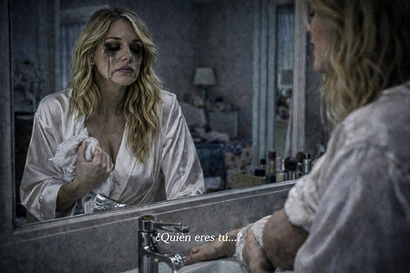
She closes her eyes and wipes her body with the towel. Her makeup runs down her face.
down her cheeks like melted ink. Look at her reflection.
LA DIVA
(Whispering)
Who are you…?
Place both hands on the sink, taking a deep breath. Turn off the tap.
Breathe again. Slowly. Turn off the tap.
INT. PYRENEAN HOUSE / CAR - IN THE MORNING
Angela Raw rubs her hands together, trying to warm them up. She looks at her reflection.
blurry on the glass.
ANGELA RAW
You know what the worst part is? The worst part isn't this. The worst part is… my real life.
MACREADY
What did you say?
ANGELA RAW
My daily life scares me more than this blizzard. The life I portray… well, that's it.
It doesn't exist. I can't keep up anymore. But people want more and more… and
I need to upload something... So... I use AI. My photos, my trips, my dinners.
There's a version of me out there who lives better than I do.
MACREADY chuckles softly.
MACREADY
Welcome to the club. If you don't feed the beast... you disappear.
ANGELA RAW
Exactly. And if they don't see you, you don't exist. And the algorithm forgets about you.
MACREADY watches her carefully.
MACREADY
Public love is a drug. It lifts you up fast. It destroys you even faster.
Still. And when you realize it, your life is just an illusion. A show.
puppets to entertain a world that is tired of you.
ANGELA RAW looks at him, fascinated.
ANGELA RAW
You know. Sometimes I think about starting an OnlyFans account. Although I don't know if...
money... or because I miss someone really looking at me.
Angela Raw shrinks in her seat. She looks out the window. She turns her gaze away.
Macready. They look at each other. She approaches him and leans towards him.
ANGELA RAW
What is that?
ANGELA RAW points to her chest.
ANGELA RAW
Are you recording?
MACREADY
Sure. I'll record everything.
ANGELA RAW
If you record me again without warning... I swear I'll turn off your fucking TV myself.
Camera. Let's go already.
MACREADY
Hey beautiful… let's stay calm.
They get out of the car. The wind hits them violently.
INT. PYRENEAN HOUSE / WATCHMAN'S ROOM - IN THE MORNING
OJOAVIZOR is sitting in an armchair. In his hands, the blue folder. In the
Outside, through the window, MACREADY and ANGELA RAW return.
OJOAVIZOR turns around and sees them.
OJOAVIZOR
The Ice Heroes…
She looks back at the dossier. Her eyes shine with excitement.
EXT. PYRENEAN HOUSE / CAR - IN THE MORNING
MACREADY and ANGELA RAW move towards the house, the blizzard pushing them.
Soon, Angela Raw stops. She turns toward the car. The wind...
hits.
MACREADY
(Shouting)
Don't stop now!
ANGELA RAW
(Shouting)
The trunk!
MACREADY looks at her questioningly.
They reach the trunk and open it abruptly. CLANG! A cloud of snow falls on it.
Above them. They open a cover, discovering the car battery. MACREADY
She grabs it and the trunk slams shut. CLANG!
INT. PYRENEAN HOUSE / KITCHEN - MIDDAY
MACREADY drops the car battery onto the table with a thud that
It echoes throughout the room.
MACREADY
“Voila!” Our power plant.
The group gathers around the table. Uncle Paco approaches curiously.
battery.
MACREADY
(TO UNCLE PACO)
You'll know what to do with this.
Nate pats Macready on the back a couple of times, without saying anything. Dude.
PACO nods, almost excited.
UNCLE PACO
If there's any charge left... It might work. I need cables, something conductive.
Everyone applauds Macready. Uncle Paco leaves, determined, just as
A watchful eye enters. He carries the folder clutched to his chest, his gaze
lit. They pass each other without speaking. Uncle Paco continues on his way. Watchful Eye
stops at the threshold.
At the door, Angela Raw watches them. Her hair still damp, her eyes
Tired. Her breathing is still ragged from the cold. No one is looking at her.
JOSÉ FIT stands back, arms crossed.
JOSÉ FIT
All this theatrics is unnecessary. We just need to wait for the storm to pass.
LA DIVA
Well, in the meantime… At least we can charge our phones, darling.
The watchful eye moves toward the table and drops the blue folder. The thud cuts through the air.
The conversation. The leaves fly, they scatter.
They all stare, confused. The papers contain photos of themselves.
reports, copies of emails, follower lists, debts, contracts.
SOLE
What the hell is this?
LA DIVA
That photo… is from my wedding.
UNCLE PACO
This is my address. How did you get this?
EYEWATCH points to MACREADY.
OJOAVIZOR
They were in his room. He has information about all of us.
The entire group distances itself from Macready. Angela Raw also joins the group.
from the table and pick up some papers.
ANGELA RAW
Did you have folders with our lives?
LA DIVA
Personal details.
SOLE
And what we owe.
Their eyes meet.
MACREADY
While I was risking my life out there… you were rummaging through my things. Rat
scavenger.
ANGELA RAW
I was out there too.
Nobody looks at her.
OJOAVIZOR
Because you entered ours first. You record us, you observe us.
Right, Nate?
Everyone turns to look at Nate. MacReady watches him and nods.
indicating that he shouldn't speak. Nate lowers his gaze.
MACREADY
(Disappointed)
You too, Brutus?
Suddenly, Macready lunges toward the table. He tries to pick up the papers.
But the others grab them too, desperate to see what's theirs.
Hands cross, they push, the pages tear.
SOLE
Give me that one, it's mine!
LA DIVA
I want to see what it says about me!
Suddenly, the door bursts open. Uncle Paco appears, carrying...
a stack of appliances: an old radio, cables, an iron, a toaster
broken and a lamp without a shade.
UNCLE PACO
Can I leave this here?
Nobody answers. They keep pulling at the papers.
UNCLE PACO
Well… with your permission.
Uncle Paco carefully moves the papers off the table and places his devices
on top of this. Some papers fall to the floor.
SOLE
Don't touch them, they're mine!
UNCLE PACO
Relax, daughter, I'm not interested in your biography.
Uncle Paco connects one cable to another, tests a switch, concentrates.
ANGELA RAW
And now I understand. It was all part of your plan, wasn't it? You wanted
material.
Their eyes meet, challenging each other. The group tenses. EYEWATCHER smiles.
MACREADY
(To the group)
You all knew what you were there for. I just turned on the lights.
Uncle Paco causes an electrical crackle. A blue spark jumps between two
Cables and the red light on a power strip come on. Everyone stares.
UNCLE PACO
It works! We have power!
An explosion of collective joy. Sole screams. Nate jumps for joy. The Diva
applauds.
NATE
We can install the radio!
SOLE
And charge your mobile phones!
Everyone runs away. Only MacReady and Angela Raw remain, holding the
gaze. Among them, the battery blinks.
INT. PYRENEAN HOUSE / STAIRS - MIDDAY
They run up the stairs.
SOLE
Let me through!
LA DIVA
No way! I saw it first!
INT. PYRENEAN HOUSE / KITCHEN - MIDDAY
ANGELA RAW stands in front of MACREADY, her face tense.
The group interrupts, they all return with the chargers, dragging
cables, chargers and devices.
SOLE
Me first, I only have 2%!
JOSÉ FIT
My phone takes priority, I record with it.
LA DIVA
I live off my image!
They pull their hands away. They fight to see who connects first.
UNCLE PACO
Careful! You can't connect everything at once! You could fry it!
Nobody can hear him. The cables are tangled on the table,
SOLE
I only need five minutes!
LA DIVA
(Clinging to the strip)
Let her go! She's mine!
The power strip wobbles, the drum kit trembles on the table. The cable
It's drizzling.
UNCLE PACO
If we overload this, goodbye battery!
NATE
Radio must be prioritized!
The diva unwinds the cord of a hair dryer.
LA DIVA
Prioritize whatever you want, but my hair is soaking wet.
UNCLE PACO
(Shouting)
For God's sake, stop! Don't plug that in!
Connect a hairdryer to the power strip. The lights flash, the battery
vibrates.
MACREADY
Unplug that!
LA DIVA
Just a second, I just want to—!
The hairdryer explodes with a snap. The diva drops it on the table. Dude.
Paco tries to grab the hairdryer so it doesn't fall on the battery.
A blue spark flashes through the air and UNCLE PACO screams, shaken by a shock.
UNCLE PACO
(Bobbers)
This… this wasn't calculated correctly…
His body arches and Uncle Paco falls to the ground, convulsing. His eyes
half-open, the rigid body.
The power strip switches off. Silence. Everyone freezes.
The diva steps back, pale. Her companions stare at her.
LA DIVA
My hair was wet! Do you know how much this "makeup" looks like when it's wet?
INT. PYRENEAN HOUSE / LIVING ROOM - IN THE AFTERNOON
The living room is dimly lit. Gray light comes in only through the windows. UNCLE
Paco lies motionless on the sofa, his skin pale. Macready leans over
He slaps her a couple of times.
MACREADY
Nothing… it's fried.
The diva puts her hands to her head, her mascara running.
LA DIVA
Oh my God, this is so intense. They're going to cancel me right now.
SOLE
No… this is crazy. We have to call emergency services. Now!
ANGELA RAW
Does nobody really have coverage?
NATE
No signal. No “wifi”. Nothing.
SOLE
Great. This is very Spanish.
NATE
It's Andorra!
JOSÉ FIT
The village is four kilometers away. We could walk.
MACREADY
It's getting dark. We'd get lost in half an hour.
SOLE bursts into tears.
SOLE
I really can't take my life anymore. We should have prioritized the damn thing.
radio.
OJOAVIZOR
No radio is needed. This is not by chance.
Everyone is looking at him.
OJOAVIZOR
I don't want to make any claims, but… the facts speak for themselves. Keep an eye on this.
detail. Her eyelids are too closed.
(Points to MACREADY)
And you already knew it.
(Points to THE DIVA)
And you were an accomplice.
LA DIVA
Excuse me? Do you know who I am?
OJOAVIZOR
You plugged in the hairdryer on purpose. To stage a escena. To create chaos.
Increase the audience.
The diva starts to cry.
LA DIVA
My hair was just wet! Do you really think this looks good on me?
JOSÉ FIT
What an audience! Nobody was recording.
OJOAVIZOR
How do you know that nobody is recording us?
MACREADY
STOP!
He kneels next to Uncle Paco and slaps him two more times.
MACREADY
You're faking it, huh?
(A WATCHFUL EYE)
Do you want to try it?
EYE WATCHFUL rolls up his sleeves, ready.
OJOAVIZOR
Delighted. I've seen fakirs in India endure more than this.
OJOAVIZOR takes a step forward, but stops. ANGELA RAW has moved closer.
to the sofa. He kneels down and puts his ear to Uncle Paco's chest. Silence.
ANGELA RAW
He has a pulse. Weak, but he's alive.
Everyone holds their breath. Nate records the moment. Macready doubles his
He takes his jacket and places it theatrically under Uncle Paco's head. He looks at his
around with solemnity.
MACREADY
Our priority now is to save him. This isn't about showmanship. This is about
humanity.
He pauses, then turns his head back to NATE.
MACREADY
Did you record it?
NATE
Yes. Fabulous.
MACREADY
Great job, Nate!
EXT. PYRENEAN HOUSE - NIGHTFALL
The sun, weak and orange, sinks behind the mountains.
INT. PYRENEAN HOUSE / KITCHEN - NIGHTFALL
The amber light of sunset filters through the windows. The dust in
The suspension floats in the air.
They eat in silence. Only the sound of spoons clattering against the dishes and breathing can be heard.
It's cold and windy outside. Faces are tense, tired. We listen
each person's thoughts.
MACREADY (OFF)
What a sight. What an ugly sight! Please… This… this is pathetic.
After all the great plans I made... and here I am, eating frozen soup for dinner.
with long faces. If I lose the fifty thousand, goodbye sponsors.
Goodbye renewal, goodbye everything. If someone screws me over…
MACREADY looks up. His eyes are fixed on ANGELA RAW.
ANGELA RAW (OFF)
I was out there freezing my ass off, crawling through the snow. And for
What? I walk in the door and nobody looks at me. Not a single fucking glance. I'm
tired of “putting out good energy” while everything falls apart.
EYEWATCHER looks at the group as if analyzing a crime.
WATCHFUL (OFF)
Look at them. Living dead. That's what they are. Truly disturbing.
Something doesn't add up here… I'm the only one awake. The one who saw the
TRUE.
OJOAVIZOR looks with disdain at JOSÉ FIT, who is devouring his “tupper”.
WATCHFUL (OFF)
And that musclehead is stuffing himself silly. Just wait until there's no food...
Let's see who laughs. That's when the real show begins.
José Fit returns his gaze while chewing rudely.
JOSÉ FIT (OFF)
My God… How spineless, for goodness sake. A power outage and they're already crying. Here
I'm the only one who's prepared. Discipline: that's what's missing.
José Fit looks up and stares at La Diva. She smiles at him.
JOSÉ FIT (OFF)
…and look at that bitch. If I wanted… I could knock the wind out of her in ten minutes.
She's probably still breastfeeding.
THE DIVA (OFF)
OMG… the way she's looking at me, oh please…. I hope the signal comes back soon. My
Metrics! God, I need to get back. And my little girl… I hope she's asleep. Although… Well… sleeping alone isn't ideal either.
It's the end of the world.
SOLE stirs the soup, distracted.
SOLE (OFF)
So… not even a message from Salva?
No message. No call. Nothing. I find that awful. What a disgusting guy. And what
This life sucks. I'm getting this out of my body tomorrow. One way or another.
SOLE catches Macready's eye and then looks at Nate.
SOLE (OFF)
And that… God knows why he prefers to record that faggot rather than me.
Tomorrow… tomorrow he will look at me.
SOLE and NATE look at each other.
NATE (OFF)
What a load of crap we're recording. Zero rhythm, zero aesthetics, zero narrative.
I don't know what she hopes to get out of this circus… And Sole… Sole is very attractive. Almost a MILF.
INT. PYRENEAN HOUSE / HALLWAY ROOMS - NIGHT
Darkness. Soft footsteps on the wood. The Diva leaves her room. She goes
to knock on José Fit's door when, at the end of the hallway, appears
Nate, carrying the same wooden box as the night before. They cross paths in
halfway down the hallway. THE DIVA smiles with forced innocence.
LA DIVA
And… what are you carrying there? “Premium” content?
NATE
It's none of your business. And... in horror movies, the ones who run away to have sex...
They don't usually reach the end.
She looks at him as if she hadn't heard correctly.
LA DIVA
I'm not "like that"!
Nate continues walking towards Macready's room. The diva remains a...
second watching him walk away. Then he knocks on José Fit's door with the
knuckles, gently, twice.
INT. PYRENEAN HOUSE / MACREADY ROOM - NIGHT
Nate enters the room with the box in his hands and places it on the
comfortable.
Macready is sitting on the edge of the bed, wrapped in a blanket.
Bright and massaging her neck. Without looking at him.
MACREADY
Warm your hands a little, okay?
NATE sighs, rubbing his hands together. MACREADY looks at him lasciviously.
INT. PYRENEAN HOUSE / JOSÉ FIT ROOM - NIGHT
José Fit is sitting on the bed, shirtless, applying cream to his face.
The body. The diva is sitting in a chair. She doesn't take her eyes off him.
while speaking.
LA DIVA
I can't take it anymore, José. They've singled me out… They've made me feel like I'm a
criminal. As if I wanted it to happen!
JOSÉ FIT
Nobody's innocent here... That cretin... He knows too much about everyone. Those
papers… He could sink us if he wanted.
There is a silence.
LA DIVA
I don't trust him either. There are things that… I don't want anyone to know.
She lets out a long, dramatic sigh. José Fit stares at her.
LA DIVA
You know, I became a mother… not because I wanted to, but because my husband said that a
The baby gave “engagement”. It humanizes you, it makes you real… do you know how powerful that is?
that?
A tear falls down her cheek without her noticing.
LA DIVA
I love her. But I can't cope with this life. There's no silence. There's no time. No.
there is… me.
José Fit puts down the cream, grabs a towel, and approaches her while she
dry.
LA DIVA
And… what does he have against you?
José Fit looks at her seriously. He opens a toiletry bag and takes out a prepared syringe.
THE DIVA opens her eyes and looks surprised.
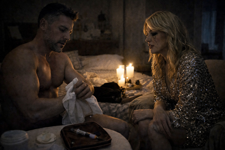
LA DIVA
Is that…?
JOSÉ FIT
It's only two cycles a year. I've got it all figured out. But… if anyone…
The whole thing… will make me lose all my followers. Could you help me? With such
Little light… I don't know if I'll be able to do it on my own.
She looks at him. She looks at the needle. She looks at his broad back.
LA DIVA
I've never done anything like this before. Where do I stick it?
José Fit stands up, turns around, and pulls down his pants.
showing her ass.
JOSÉ FIT
(Smiling)
Here. On the buttock.
She swallows. Her hand trembles slightly as she picks up the needle.
He thrusts it into the upper part of her buttock. When he finishes, he returns to
They sit next to her. They look at each other closely. Very closely.
LA DIVA
(Trembling)
José… I never…
JOSÉ FIT smiles calmly.
JOSÉ FIT
It's okay. I understand. Between the stress, the baby, the quarantine… You can
trust me.
She nods. José Fit reaches out and takes her hand. He takes it and leads her hand
From THE DIVA to her breast. She touches it, fascinated.
JOSÉ FIT
Okay. Don't tell anyone my secret.
She smiles.
LA DIVA
Really? I'm not going to upload it. What do you take me for? I can save a
secret… And you?
JOSÉ FIT
I can save one. And two… and as many as needed.
José Fit moves closer. They kiss. They embrace. And they lie down.
frolicking on the bed.
FADE TO BLACK
EXT. PYRENEAN HOUSE – DAWN
The storm has stopped, but the house is still trapped under a meter of snow.
The day dawns gray.
The following sign appears over the image:
Outdoor Temperature: -18º
Indoor Temperature: 12º
INT. PYRENEAN HOUSE - DAWN
Through the windows, all you can see is white. Watchful Eye, wrapped in a blanket, is
Standing in front of a window, he has a faraway look in his eyes. His silhouette is a
dark shape against the light.
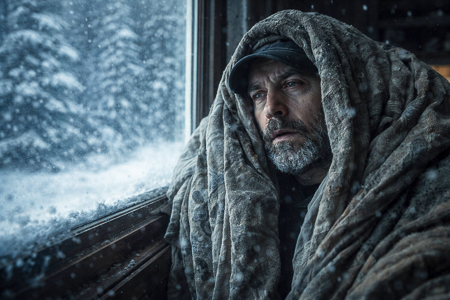
WATCH OUT FOR CHILD (OFF)
Mom… look… look at all the snow! Can I run? Can I? You told me that
I could use my new sled when it really snows… Mom… look at me, Me
I'll throw it, okay? Just a little bit… Mom… don't let go. No… don't let go again
time.
Nate, covered with a blanket, checks the light switches,
They still have no electricity.
ANGELA RAW places another blanket over UNCLE PACO, he trembles gently, he is
Delirious, unable to respond. She's wearing a coat. Uncle Paco moves
His head tilted to one side, he murmurs something unintelligible.
At the other end of the room, MACREADY watches her from a distance.
They exchange glances without saying a word. Angela Raw lowers her gaze, then returns to
arrange the blanket over UNCLE PACO.
INT. PYRENEAN HOUSE / KITCHEN - IN THE MORNING
All (MACREADY, ANGELA RAW, JOSÉ FIT, LA DIVA, SOLE, NATE and OJOAVIZOR)
They are dressed in coats and covered with blankets.
On the kitchen island they place what little food remains: cans,
energy bars, an open package of cookies, a bag with two
potatoes…
SOLE
This… this won't even last a week.
LA DIVA
Not even for two days.
OJOAVIZOR focuses its gaze on JOSÉ FIT's “tuppers.”
OJOAVIZOR
Well, we can share the big guy's Tupperware... then.
José Fit turns his head sharply.
JOSÉ FIT
No way. That's mine.
OJOAVIZOR
In extreme situations, we must think about the common good. The triceps can
wait.
JOSÉ FIT
I need more calories than you do. And this isn't going to last. No.
Don't be dramatic. We're in Andorra, not on Mount Everest.
OJOAVIZOR
Exactly! Because none of this is real. The confinement, the hidden cameras…
There's definitely a team in a basement watching us right now.
MACREADY
You're crazy. Go down to the basement and see for yourself. And if you want, you can stay there.
OJOAVIZOR
You brought us here to record us like rats.
SOLE
I'm also starting to think that coming here was a mistake.
LA DIVA
Absolutely.
MACREADY raises his hands like a tired preacher.
MACREADY
You can see this as a disaster or as further proof. Everyone here has
I've had videos that didn't work, or followers who left. And yet...
You kept going. You turned the score around. That's what we do.
turning crap into content.
WATCHFUL EYE gets ahead.
OJOAVIZOR
I don't give a damn about followers. I want to tell the truth. And
Otherwise, you'll let me talk about the underground cities where the elites live…
(Pause)
…you can shove your show up your ass.
ANGELA RAW
Sometimes you have to put your followers aside and be human. We have
Someone in the other room needs help.
SOLE
Exactly. We need to ask for help now.
LA DIVA
If Paco dies here, we're going to be torn apart on social media.
JOSÉ FIT
The least we can do is try to save him.
MACREADY looks around.
MACREADY
Okay. We'll ask for help.
A thick silence falls. Eyes meet.
MACREADY
Someone has to go out there and look for her.
Silence. Nobody moves.
MACREADY
And that someone... is me.
ANGELA RAW
You?
MACREADY
I'm the host. Besides, it's only four kilometers. I'll be able to make it.
SOLE
With this blizzard?
MACREADY
If I don't do it, who will?
Everyone nods.
OJOAVIZOR
This is all part of the setup.
The cold isn't real. The blizzard is just a giant fan.
Everyone turns towards WATCHFULEYE.
INT. PYRENEAN HOUSE / ENTRANCE - IN THE MORNING
The front door is covered by a thick layer of ice on the inside.
The wind can be heard blowing from outside.
MacReady buttons up his coat. Nate picks up a 100-meter roll of cable.
meters and prepares it. He approaches Macready and ties the end of the cable to him.
at the waist. They both look at each other.
NATE
We'll tie you up so you don't get lost on the way out. When you find the
I walk… you let go.
MACREADY nods.
MACREADY
Relax. You're not getting rid of me that easily.
He winks at her. NATE swallows.
NATE
Who's holding it?
José Fit steps forward and takes it.
JOSÉ FIT
Me. Are you sure about this? Walking in deep snow is no joke.
ANGELA RAW
The wind disorients you. One wrong step… and you don't know how to get back.
SOLE
Maybe… we should think twice about it.
MACREADY
Something tells me I have to do it. For you. For this team.
MACREADY looks at NATE, who is holding the camera.
MACREADY
Did you record it?
Nate gives a thumbs-up. Macready smiles. He turns toward the door. The
The rest step aside.
Macready turns the knob. He takes a deep breath, like an astronaut.
Step out into the void. Open the door. A brutal gust of wind and snow invades.
The foyer. Macready exits.
José Fit is letting go of the rope. Macready is advancing. With each step his figure
It vanishes in the blizzard. And suddenly… the cable slackens and falls to the
floor.
JOSÉ FIT
It's come loose! It's come loose!
NATE
Cool the cable!
José Fit's hands gather the cable with frenetic speed… until
To be left with a loose end. Everyone is looking at the empty end.
SOLE
No… he can't have gone that far.
The diva covers her mouth.
LA DIVA
My God…
ANGELA RAW
Is he alive? Are you…?
OJOAVIZOR
I knew it. A ruse. A calculated disappearance.
NATE
Shut up. It wasn't a trick.
OJOAVIZOR
Disappearing into the snow… the kind of story he would tell!
EXT. SNOWY MOUNTAIN - IN THE MORNING
MACREADY advances, sinking into the snow up to his knees.
MACREADY
(For itself)
But who the hell told me to… who? “Come to Andorra, you’ll have some advantages
"Prosecutors, you'll live in luxury..." Damn it all, holy shit!
He slips and falls to his knees in the snow. He tries to get up. He crawls.
even a tree that he clings to for support.
MACREADY
So what now? Die here like a fool?
He slides down the tree trunk and falls into the snow, exhausted.
MACREADY
I knew it. The cemetery is full of brave souls, isn't it? What a...
Shitty headline: “Influencer dies in Andorra trying to be good”
"Person." I shit on these mountains.
His trembling hand pulls his phone from his pocket. Five percent battery. He turns it on.
The camera. The snow hits his face. It's being recorded. His image appears.
trembling.
MACREADY
If anyone finds this… Know that I tried. That I gave it my all.
You. For teaching you… I've been a role model. A beacon… A friend
invisible…
He lowers his phone, dejected. He closes his eyes in resignation.
MACREADY
Invisible… invisible my ass.
Open your eyes. Frown. In the distance, you see a faint, orange glow.
and a column of smoke rising.
MACREADY
But what…? Shit…
She wipes her face, rubbing her eyes. She stands up as best she can.
leaning against the tree.
MACREADY
Seriously? Holy shit, there are people there!
Macready starts walking. He hurries. Clumsily. Stumbling. With
animal desperation.
EXT. TECHNICAL TEAM HOUSE - MORNING
MACREADY approaches the door and bangs on it forcefully.
MACREADY
Open up, damn it!
Walk around the house and look through a window.
INT. TECHNICAL TEAM HOUSE - IN THE MORNING
Inside, the technical team is calmly playing a game of
Table. The lights are on. Thermoses of coffee. Folding chairs.
Coats hanging up.
MACREADY
Sons of a thousand fathers!
INT. TECHNICAL TEAM HOUSE - IN THE MORNING
Around the lit fireplace, folded blankets, they drink from cups and
They play Catan.
One of them, Rafa, sees Macready through the window and smiles.
RAFA
Hey! It's him! It's him!
INT. TECHNICAL TEAM HOUSE - IN THE MORNING
Several technicians accompany Macready to the sofa, covering him with a
A blanket and a steaming cup. Around her, the technical team...
settles down next to him.
MACREADY
I was… almost frozen to death. Literally.
RAFA
Yes. It's freezing. We haven't left the house for two days.
Macready looks around: the fireplace, the steaming cups of coffee…
MACREADY
You've made a fire!
TECHNICIAN 2
Sure. A couple of cigarettes and some toilet paper, well and…
TECHNICAL 3
And books. There were piles of boxes in the attic.
TECHNICIAN 2 teaches the book Anatomy of Evil by Jordi Wild.
TECHNICIAN 2
It burns like the devil.
RAFA
Do you want to join the game?
Macready looks at them, perplexed, confused. Almost offended… He takes off his
jacket, revealing her undershirt, and fits better
on the sofa.
MACREADY
What game are you playing?
TECHNICIAN 1
Don't you know Catan?
MACREADY shakes his head.
RAFA
You're going to love it. You have to manage resources, build, and negotiate with
The others. That's how civilizations are born.
MacReady listens attentively. He takes a sip from his cup, looks around… he looks at the
stove… look at the blankets… look at the faces of those around him. And
Finally, she looks up at the camera. She raises her eyebrows. She shrugs.
shoulders. And smile.
LINKED TO:
INT. PYRENEAN HOUSE / RECORDING SET - AFTERNOON
The room is dimly lit. Nate, with a blanket over his shoulders, watches.
Head bowed, the large MACREADY sign. SOLE appears in the doorway. She approaches
Slowly, also wrapped in a blanket. From the living room, you can hear the
others.
THE DIVA (OFF)
We have to go find him.
JOSÉ FIT (OFF)
Go out there? Are you crazy?
WATCHFUL (OFF)
The cold isn't real. I'm going out there and I'm going to prove it.
ANGELA RAW (OFF)
You're crazy!
JOSÉ FIT (OFF)
The wind will kill you, you idiot!
THE DIVA (OFF)
Go back inside, damn it. Don't do this.
WATCHFUL (OFF)
The cold… isn't… real…
SOLE and NATE look at each other.
SOLE
I'm sure it's fine. It's one of those... ones that appear at the last second
to shut us up.
NATE is unresponsive. He clenches his jaw.
NATE
No. The rope came loose too soon. And I… I let him go. And he… he never…
He doesn't know his way around. Never. He can't even find his car when he parks.
SOLE moves closer to him and wraps her arms around him while resting her head on him.
on his shoulder.
SOLE
It's not your fault. He chose to leave. Sometimes people decide to do foolish things.
by itself.
SOLE raises her head and looks into his gaze.
SOLE
Listen… The show isn't over. Okay?
NATE slowly raises his head. Their eyes meet.
NATE
You speak like him.
SOLE
Someone has to do it.
Nate stares at Macready's frozen smile on the screen. Then he looks at the
Sole's defiant smile. And without saying a word, she nods.
SOLE
Come on, Nate. The show goes on. With you… or without him.
INT. PYRENEAN HOUSE / KITCHEN - IN THE AFTERNOON
The kitchen is freezing and dimly lit, illuminated only by the gray light that filters in.
From the windows. The group is around the island. In the center, José Fit
And OJOAVIZOR, argue face to face.
OJOAVIZOR
Because of selfish people like you, humanity will become extinct. First you hoard.
Food, then what? Air! … It's the cycle of destruction!
Always the same.
JOSÉ FIT
No, champ. That's called natural selection. Only the best survive.
prepared.
She lifts her Tupperware container as if it were a trophy.
JOSÉ FIT
Next time… bring your own.
OJOAVIZOR clenches his jaw. His face trembles. NATE and SOLE enter.
SOLE
Let's see… If this goes on much longer, we'll have to… think. We can't live on air. Or
We share the food that's there... or we'll end up... badly.
Everyone stares at her in surprise.
SOLE
What? Haven't you seen Society of the Snow?
LA DIVA
They had been there for weeks…
JOSÉ FIT
Nobody has died here.
OJOAVIZOR
Still...
The door bursts open. Angela Raw enters, pale-faced, the
shortness of breath.
ANGELA RAW
No… There won't be any need to wait.
Everyone turns to look at her. The silence is deafening.
ANGELA RAW
Paco… has stopped breathing.
Nobody speaks. Nobody moves.
WATCHFUL EYE advances slowly.
OJOAVIZOR
Well, well… We'll have to check it.
The rest look at each other, puzzled.
INT. PYRENEAN HOUSE / LIVING ROOM - IN THE AFTERNOON
The living room is an impromptu wake. Uncle Paco is lying on the sofa.
rigid, the blanket covers him up to his chest.
ANGELA RAW has her ear pressed against her chest. She slowly pulls away.
ANGELA RAW
No… He's not breathing.
Silence.
José Fit takes her wrist and checks for a pulse. She shakes her head. She raises
He lifts his arm and lets it drop like a dead weight. Then he gives him a couple of
slaps.
JOSÉ FIT
Paco! Hey! Hey! Come on, man. Snap out of it.
EYE-EYE approaches with enthusiasm.
OJOAVIZOR
Okay, move it. Let me do it.
EYEWISE gives him a few slaps.
OJOAVIZOR
Come on, Paco! Enough with the theatrics, okay?
The rest look at him in horror.
SOLE
What are you doing, you animal?
OJOAVIZOR
He's holding his breath. It's obvious.
ANGELA RAW
Don't talk nonsense! Paco was trying to help us… while others
They were charging mobile phones…
ANGELA RAW turns towards THE DIVA.
ANGELA RAW
…and they combed their hair.
LA DIVA
(Outraged)
Excuse me! And what did you want? To die of pneumonia with wet hair?
It's so cold!
An awkward silence falls. The group slowly moves away, forming a
semicircle around the body.
SOLE
Yes… if he's really dead… we'll have to move him.
Everyone is looking at her.
SOLE
To the snow. To preserve it.
Everyone nods.
JOSÉ FIT
Come on, Nate… help me.
The two of them crouch down and grab Uncle Paco by his arms and legs.
JOSÉ FIT
It doesn't weigh much, does it? All lean.
ANGELA RAW
(Furious)
Are you even listening to yourself?! Are you seriously talking about eating someone?
LA DIVA
(Mordaz)
Oh, please… not all of us are “flexivegans” like you. Or whatever that's called.
charade.
ANGELA RAW
Excuse me? Are you calling me a hypocrite? YOU? You just gave birth and already
You're flirting with the first hunk you see... like this is "The Island of
the temptations.”
The diva suddenly stands up.
LA DIVA
(Rabiosa)
Look, pretty girl!
Angela Raw also stands up. Both are an inch apart.
Tight breathing. Sharp stares.
JOSÉ FIT
Hey, hey, hey, calm down.
SOLE
Sit down, damn it! We're not at "Ibai's Evening"!
ANGELA RAW and LA DIVA continue to lock eyes, on the verge of exploding.
EXT. PYRENEAN HOUSE / ENTRANCE - NIGHTFALL
NATE and JOSE FIT drag UNCLE PACO'S body and leave it at the entrance
from the house. They take a step back, breathing deeply.
At that moment, WATCHFUL EYE appears, wrapped in his blanket. He stares.
to the corpse.
OJOAVIZOR
He's not dead. I've seen that before in documentaries. He's gone into a
a kind of… suspension of life.
NATE runs a hand over his face, exhausted.
NATE
Sure. Hibernates.
JOSÉ FIT
Like a bear.
NATE and JOSÉ FIT walk past OJOAVIZOR and leave him alone observing the
Uncle Paco's body.
OJOAVIZOR
(To Uncle Paco)
Climate change is a fraud.
INT. PYRENEAN HOUSE / LIVING ROOM - NIGHTFALL
NATE and JOSÉ FIT enter. In front of them, THE DIVA, in the dim light of a
window behind, recorded with the mobile phone vertically:
LA DIVA
(On camera)
Today life has dealt us a blow… We have lost a friend. A teacher. But
We're still here. United. For you.
A couple of meters away, ANGELA RAW has set up a small set with a candle and
A blanket serves as a tribal backdrop. It is also filmed vertically.
ANGELA RAW
(On the phone)
When life takes something away from you… it's because it needs space for something new.
Today we honor the spirit of Paco.
SOLE looks at NATAE.
SOLE
Do you have the camera?
NATE hesitates for a second. He nods.
SOLE
Take it.
NATE turns on the camera. SOLE takes a step to the center of the room.
SOLE
Can you leave the reels for a second? We still have no signal, in case you didn't notice.
You had noticed. Anyway.
(Pause)
We have a real problem.
The house is getting cold.
If we sleep separately… we can't stand it.
NATE nods, as a gesture of support.
SOLE
So… we'll all sleep here. In the living room. It'll be easier to keep things tidy.
heat.
The girls look at her in surprise.
LA DIVA
All together?
From the hallway emerges OJOAVIZOR, wrapped in a blanket. In his arms he carries
Uncle Paco's blanket.
OJOAVIZOR
Does anyone want another blanket? Paco doesn't need it anymore.
Silence.
OJOAVIZOR
Well… I'll keep it.
OJOAVIZOR settles into the sofa, in the space left by UNCLE PACO, and
Cover with the blanket.
INT. PYRENEAN HOUSE / LIVING ROOM - NIGHT
Near total darkness. Bodies are scattered around the room. Breathing.
Creaks, whispers.
JOSÉ FIT slips between the blankets and gropes his way to THE DIVA and
He snuggles up to her and they whisper.
JOSÉ FIT
Are you hungry?
LA DIVA
It depends. Food… or something else?
JOSÉ FIT
Whatever you want. I can share what I have.
LA DIVA
It's cold.
José Fit moves closer. She hesitates… for a second.
LA DIVA
Give me warmth…
José Fit kisses her neck.
LA DIVA
José…
JOSÉ FIT
Have you never done “edredoning”?
The diva puts a hand to her mouth to stifle a laugh. She turns away.
She reaches for him and pulls the quilt over herself. The blankets shift.
A few meters away is SOLE, lying down looking at the ceiling.
SOLE
Damn it… Nobody can sleep here.
He squirms. He covers his ears with the blanket.
Sole looks around. She sees Nate get up, wrapped in his blanket. And
He leaves the room like a shadow.
The sounds of JOSÉ FIT and LA DIVA are louder.
SOLE
(To herself)
Community “edredoning”. What a great plan.
SOLE looks towards where NATE has gone.
SOLE
Well, nothing...
She gets up and follows in Nate's footsteps.
INT. PYRENEAN HOUSE / BASEMENT - NIGHT
A dark hallway. At the end, a dim light. Upon crossing the threshold, Sole sees
NATE in a corner where he has improvised his little “room of
"cargo": a box, cables, batteries, rags... and a small hand-cranked generator
Hand crank. Nate turns the crank.
SOLE
Turning the crank?
NATE is startled.
NATE
No, I just… I just charge batteries.
SOLE smiles. She approaches and observes the invention.
SOLE
And is that community content… or “Premium” content?
SOLE gently covers his mouth with her hand so he can't speak.
SOLE
Shhh. It'll be our secret.
They both look at each other. SOLE leans towards him.
SOLE
Tell me, Nate… If you only had one minute of battery left… what would you record?
He swallows.
NATE
I don't know.
Sole smiles, moves a little closer, and they kiss.
NATE
I thought… you had a boyfriend.
He grabs him by the shirt and pulls him closer.
SOLE
What happens in Andorra… stays in Andorra.
They kiss again. More intensely. Sole, without taking her eyes off him, connects her
Mobile phone to a battery. Nate stops and moves slightly away from it. Pause.
SOLE
Ven.
Sole stands up. Nate follows. She leans against the table, turning her back to him.
to the batteries. He unbuttons his pants. He takes Nate's hand and the
He puts it in his pants. Sole smiles. Nate is tense.
SOLE
It's cold. First we need to warm up.
With her free hand, Sole unbuttons Nate's pants and inserts her
Hand. Each one has their hand in the other's pants. Sole seems
try harder than NATE.
SOLE
I can give you everything you like…
SOLE spits into her free hand and moves her hand towards her ass
NATE. He puts his hand in his pants. NATE jumps. His eyes...
They shine.
Do you like it?
NATE
Yes.
SOLE
Say it louder.
NATE
Yes. Go on.
SOLE
Higher.
NATE
Keep going. Keep going.
SOLE smiles. NATE'S voice travels down the darkened hallway.
FADE TO BLACK
EXT. PYRENEAN HOUSE - DAWN
The house remains trapped under a meter of snow. The blizzard has stopped.
A ray of sunshine pierces the gray clouds.
The following sign appears over the image:
Outdoor Temperature: -10º
Indoor Temperature: 8º
INT. PYRENEAN HOUSE / LIVING ROOM - DAWN
The light streams harshly through the windows. Bodies are scattered under blankets.
Duvets move.
José Fit wakes up. Beside him is La Diva, fast asleep. He
He watches her. He moves a strand of hair aside and strokes it.
LA DIVA
(Without opening my eyes)
Don't look at me! I'm not wearing makeup.
JOSÉ FIT
You look perfect in this light.
She smiles, still half asleep.
JOSÉ FIT
I've been thinking. Even though this lockdown is a bitch…
(Pause)
I could get used to this.
She opens her eyes and smiles. She turns towards him. They kiss.
SOLE grumbles from under the blankets and peeks out with her hair all disheveled.
SOLE
God… I'm going to throw up. Can you guys be a little less cheesy?
JOSÉ FIT laughs.
JOSÉ FIT
I'm going to train.
She gets up, dragging her blanket. She passes by Nate, who is still asleep, the
mouth open, hugging a cushion like a child.
Angela Raw stands silently in front of the window. José Fit walks by.
Meanwhile, she drops the blanket and starts doing burpees.
ANGELA RAW
There's someone in the kitchen.
JOSÉ FIT stops.
JOSÉ FIT
Who?
ANGELA RAW
I tried to stop him. But he wouldn't let me.
A noise comes from the kitchen. José Fit opens his eyes furiously.
JOSÉ FIT
Time to kill the pig.
José Fit heads towards the kitchen. Angela Raw turns towards the group.
ANGELA RAW
Perhaps we should… intervene.
SOLE looks up and reaches out to shake NATE.
SOLE
Nate… Wake up. We have a problem.
INT. PYRENEAN HOUSE / KITCHEN - IN THE MORNING
Hidden behind the kitchen island, OJOAVIZOR devours one of the “tuppers”
José Fit's chicken and rice.
Sound of footsteps. Look up.
José Fit appears at the door like an enraged orangutan and kicks it.
to the "tupper" that flies away scattering the rice.
JOSÉ FIT
GET UP!
OJOAVIZOR, resigned, tries to get up… but JOSÉ FIT hits him and
sends him back to the ground. EYE-WATCHER rolls, trying to protect himself.
OJOAVIZOR
A bit of an exaggeration, don't you think? You're a little nervous. Look at that temper of yours!
You can't live like this, man.
José Fit starts kicking him on the ground. Ojoavizor crawls under the
table dodging the blows.
Everyone's in: SOLE, NATE, LA DIVA and ANGELA RAW.
SOLE
He's going to kill him! Grab him!
The three of them, SOLE, ANGELA RAW and NATE, hold JOSE FIT.
JOSÉ FIT
Let me go!
WATCHFUL EYE stands up.
OJOAVIZOR
Come on, big guy. The only one who can get hurt here... is you.
José Fit manages to break free; everyone backs away from him in fear. He lunges.
about WATCHFUL EYE. He throws a few punches that WATCHFUL EYE dodges by moving
around the kitchen.
OJOAVIZOR
Relax, Hulk. I've trained with the Navy SEALs.
José Fit gets even angrier. And lunges at him. Ojoavizor dodges, circles around him, and
He climbs onto her back, performing a "rear-naked choke".
LA DIVA
SOMEONE DO SOMETHING!
OJOAVIZOR
Relax! It's blood strangulation.
NATE walks over to the table. He picks up his camera and gets ready to record.
José Fit tries to fight against the strangulation and attempts to pull himself out
WATCHFUL EYE above: bumps into the countertop, the refrigerator, into
the drawers.
ANGELA RAW
STOP, YOU'RE GOING TO KILL HIM!
OJOAVIZOR
It's okay! He'll just fall asleep…
José Fit loses consciousness. His legs go weak, his body loses
All will and it collapses. The watchful eye falls on top of him. José Fit's head
He hits a corner of the kitchen island.
CRACK.
Silence.
OJOAVIZOR moves away from the body. LA DIVA bursts into tears. SOLE covers her
mouth. NATE records everything.
OJOAVIZOR
What are you going to do now with all that muscle?
José Fit's skull is split in two. Blood gushes out.
Dark. Her legs are convulsing.
LA DIVA
(Heart-rending scream)
¡¡JOOOOOSÉÉÉ!!
WATCHFUL EYE gets up, looks at the bloody mass.
OJOAVIZOR
…this wasn't in the script.
Touch the blood with a finger and taste it with your tongue.
OJOAVIZOR
…well, it could be real. It's well done.
The diva throws herself onto José Fit, crying.
SOLE
WOW! JUST WOW!
ANGELA RAW grabs OJOAVIZOR by the lapels.
ANGELA RAW
YOU KILLED HIM! HE'S DEAD!
OJOAVIZOR
He's not dead. No! This is a setup.
He breaks free and backs away, paranoid.
SOLE
He died in front of us!
NATE lowers the camera and checks the screen.
NATE
It's a little out of focus, but… This is going to be a hit on social media.
ANGELA RAW
Did you record it?
Nate nods. Angela Raw takes out her phone. It has 5% battery left.
He positions himself in front of the corpse and begins recording. His breathing is...
The phone is vibrating.
ANGELA RAW
(To mobile)
We're trapped... and José just... You have to see it for yourselves.
ANGELA RAW turns her phone around and shows JOSÉ FIT'S body.
The diva watches her. She composes herself. She wipes away her tears and makeup.
run. Takes out his own mobile phone (1% battery).
LA DIVA
Something terrible has just happened… We've lost one of our own. And
Nobody is coming to help us. José… is dead.
The Diva and Angela Raw meet with a glance.
ANGELA RAW
No connection.
LA DIVA
On the roof.
They run out in a rush.
Sole and Nate watch them from the window.
SOLE
My God. But these women…?
NATE hesitates… looks at SOLE and then… runs after them.
EXT. PYRENEAN HOUSE / ROOF - IN THE MORNING
ANGELA RAW and LA DIVA try to climb through a snowdrift towards the
ceiling. They struggle to be the first to climb up.
The Diva stretches Angela Raw's leg, causing her to fall to the ground.
ANGELA RAW
Hey! That's dirty play!
LA DIVA
Anything goes, darling.
The diva takes advantage and climbs another two feet. She looks at the ledge; it's full of
ice icicles.
LA DIVA
This is extremely dangerous, huh?
The diva slips and sinks into the snow.
LA DIVA
Shit!
ANGELA RAW gets up and climbs again.
NATE reaches out to help THE DIVA.
INT. PYRENEAN HOUSE / KITCHEN - IN THE MORNING
Through the window, Sole sees the escena.
SOLE (OFF)
(Speaking from the inside)
Record everything, Nate!
OJOAVIZOR
That's not a good idea. They're going to get into a fight.
EXT. PYRENEAN HOUSE / ROOF - IN THE MORNING
NATE moves his hand away and picks up the camera again.
EXT. PYRENEAN HOUSE / ROOF - IN THE MORNING
The diva gets up and brushes the snow off her face, as if she had
The snow ruined the look.
LA DIVA
This… this doesn't suit me at all…
Start climbing again.
Angela Raw, unable to move forward, puts her phone in her mouth. She pulls with
Strength. His legs are kicking.
He reaches the edge of the roof. He gets up panting, his phone soaked.
He raises it towards the sky.
ANGELA RAW
Come on, come on…
The diva struggles with the snow. She tries to climb with one hand; with the other,
He grabs his phone and doesn't let go for a second.
NATE
You need both hands! You won't be able to climb like that!
LA DIVA
I'm not letting go of it, not a chance!
The diva sticks the entire mobile phone into the snow and tries to use it as an ice axe.
ANGELA RAW looks at her.
ANGELA RAW
You're going to be screwed!
LA DIVA
It's an “iPhone”!
Angela Raw's phone displays a small icon on the screen: 1 bar of
sign.
ANGELA RAW
(Excited)
Oh my God… yes! YES!
LA DIVA manages to reach her and tries to grab ANGELA RAW's ankle,
who is precariously balancing the mobile phone on their head.
ANGELA RAW
Let go!
Angela Raw gives her a little push with the toe of her boot. The diva stumbles.
The snow shifts beneath her. They gaze at each other. The Diva's eyes...
They open due to the tension.
LA DIVA
Angela…!
ANGELA RAW extends her hand.
ANGELA RAW
Give me the phone!
LA DIVA
(Proud)
Fuck you!
ANGELA RAW moves her hand away…
THE DIVA slips, slides across the roof.
INT. PYRENEAN HOUSE / KITCHEN - IN THE MORNING
Through the window, SOLE sees how THE DIVA falls to the ground with a resounding
CRACK.
SOLE
Oh God and the Virgin Mary!
EXT. PYRENEAN HOUSE / ENTRANCE - IN THE MORNING
The diva falls to the ground. A cloud of snow rises.
LA DIVA
You son of a bitch!
Nate films the diva writhing in pain on the floor. She tries to
Get out of the hole where it is. The phone sinks until it disappears.
LA DIVA
My mobile!
LA DIVA
NATE! Help me, damn it! And stop recording me like that! I swear on my daughter's life that
I'll gouge out your eyes!
NATE looks at SOLE, who shakes her head.
NATE
I'm sorry… but that's a brutal shot.
The diva tries to sit up, but everything hurts. She crawls.
snow.
EXT. PYRENEAN HOUSE / ROOF - IN THE MORNING
ANGELA RAW, on the roof, holds her mobile phone.
ANGELA RAW
(Downwards)
I'm sorry! I didn't mean to knock you over! Life surprises you sometimes.
LA DIVA
Bitch! You fucking murderer!
ANGELA RAW tries to descend quickly, supporting herself on her hands and knees in the snow
from the roof. ANGELA RAW accidentally hits her head on the cornice of the
house, right above a gigantic icicle, which trembles, creaks and groans
cracks.
ANGELA RAW
Oh shit!
EXT. PYRENEAN HOUSE / ENTRANCE - IN THE MORNING
The diva looks up. The icicle sways above her head.
LA DIVA
Oh, God…
Angela Raw's head appears on the edge of the roof. Their eyes cross.
Looks. Angela Raw's face reflects horror and concern. The face of
THE DIVA reflects anger and disgust.
EXT. PYRENEAN HOUSE / ROOF - IN THE MORNING
The icicle breaks. CRACK.
Angela Raw watches the icicle break off in slow motion. She takes the
hands to mouth.
ANGELA RAW
(Suppressed scream)
NO…!
EXT. PYRENEAN HOUSE / ENTRANCE - IN THE MORNING
The diva looks up and watches as the icicle falls vertically.
directly on his face.
ZAS
The ice point brutally pierces the head of THE DIVA.
Blood splatters all over NATE, staining the camera.
INT. PYRENEAN HOUSE / KITCHEN - IN THE MORNING
The blood also splatters the window in front of Sole, who cannot
hold it in and vomit while covering his mouth.
EXT. PYRENEAN HOUSE / ENTRANCE - IN THE MORNING
The diva falls to her knees. The icicle protrudes from her forehead. She collapses.
forward. The head is buried in the snow. The blood forms a
puddle on the pure white of the snow.
EXT. PYRENEAN HOUSE / ROOF - IN THE MORNING
Angela Raw, motionless on the edge of the roof. She looks down and observes the
Image of the Diva impaled. She presses her lips together. She closes them tightly.
eyes.
ANGELA RAW
You are not alone… the universe is holding you up.
Take a deep breath. And it begins its descent.
EXT. PYRENEAN HOUSE / ENTRANCE - IN THE MORNING
Nate crouches down to get a better shot of the diva's head. The blood continues.
It comes out and begins to crystallize.
NATE
It's magnificent.
A creaking sound pulls Nate from his reverie.
ANGELA RAW climbs down from the roof. And stops in front of THE DIVA.
NATE tries to film ANGELA RAW. She moves the camera away.
ANGELA RAW
No… Please… this is not the time.
Look at the DIVA's body. She swallows. Trembling, she takes out her phone and records.
the corpse without looking at it directly, out of the corner of my eye.
SOLE appears wiping her mouth with her sleeve.
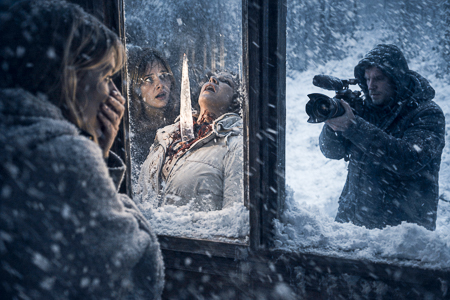
SOLE
(Horrified)
God… that's intense… That's intense, please… Is this really happening?
The three of them remain there, in silence.
SOLE
We need to move them.
ANGELA RAW
Move… what? Sorry, I need to understand this calmly.
SOLE
The bodies.
ANGELA RAW
The… bodies?
NATE
It's best to start as soon as possible.
INT. PYRENEAN HOUSE / LIVING ROOM / KITCHEN / ENTRANCE - MIDDAY
NATE, SOLE and ANGELA RAW drag JOSÉ FIT's body, leaving a trail
of blood on the floor that divides the room in two.
On the other end of the line is OJOAVIZOR, still, with his arms crossed,
SOLE
You could… help, wouldn't that piss you off?
OJOAVIZOR
I'm not going to play your game. Save the official narrative for later.
other.
SOLE lets go of the corpse for a second to face him.
SOLE
What is this? People have died, damn it! And it's your fault!
OJOAVIZOR
My fault? The question is… why did this happen here?
(Points to ANGELA RAW)
Nobody here is a saint.
ANGELA RAW looks away.
NATE
Let's go. Let's not waste any time.
SOLE
My brain can't process this.
None of this.
SOLE, furious, grabs the corpse by the arm again.
EYE-WATCHER smiles.
EXT. PYRENEAN HOUSE SIDE HOUSE - MIDDAY
They drag the body of JOSÉ FIT along with that of LA DIVA and that of TÍO PACO.
SOLE
Damn… That bastard was strong.
The three of them leaned against the walls, exhausted.
ANGELA RAW looks at them and takes a couple of steps back.
ANGELA RAW
I can't stay here.
ANGELA RAW leaves. NATE and SOLE are left alone, looking at the bodies.
SOLE
Do you realize…? There are fewer of us every hour.
NATE looks at the bodies on the ground.
NATE
This wasn't in the script.
Silence.
INT. PYRENEAN HOUSE / ENTRANCE / KITCHEN - MIDDAY
The door opens and Angela Raw enters, trembling. She stops.
At the living room table, OJOAVIZOR calmly eats one of the “tuppers” of
José Fit.
Angela Raw looks at him. Eye-Watching slowly raises his gaze. Their eyes meet
They find.
EYEWATCH smiles. He wipes his mouth with his sleeve.
OJOAVIZOR
Do you want to?
Angela Raw watches him for a few more seconds. She turns around and leaves.
OJOAVIZOR continues eating, without haste.
EXT. PYRENEAN HOUSE SIDE HOUSE - MIDDAY
NATE AND SOLE stare into space.
NATE
I could have helped her… I just had to warn her. Grab her… And instead of
That's it... I kept recording.
He clenches his fists. His eyes well up with tears.
SOLE is approaching slowly.
SOLE
Hey, Nate… Don't go that way.
NATE doesn't react. He keeps staring into space.
NATE
This site… God… this site is driving me crazy.
SOLE wraps her arms around him.
SOLE
Of course. To anyone. But we're still here. Okay? ALIVE.
He nods.
SOLE
I didn't go through all this just to go back to a "Mercadona" box.
smiling at idiots for yogurt offers.
SOLE is getting closer.
SOLE
And you… you're too good at this to stay where you were.
NATE looks down. She wraps her arms around him.
INT. PYRENEAN HOUSE / KITCHEN - IN THE AFTERNOON
NATE is leaning against the counter, dividing the food into four piles.
The food they have left: cans, sachets, a piece of stale bread and the "tupperware" containers
by José Fit.
OJOAVIZOR, sitting with Uncle Paco's blanket over his shoulders, observes with
Bright eyes. ANGELA RAW stands rigidly, away from the table.
NATE
This is what we have. Enough for four.
OJOAVIZOR
If this doesn't improve in two days… we'll have to consider… other options.
ANGELA RAW
Other options? Are you kidding me? No way. We're not going to cross that line.
SOLE
What? Now you're the moralist of the group? Angela… This isn't a retreat
spiritual.
ANGELA RAW looks at NATE, seeking support.
ANGELA RAW
Tell me you're not thinking the same.
NATE is not responding.
NATE
Okay… we're just talking. Neither of us wants to do this. But if this continues
So…
That can be verified. Just watch Nate's video and leave.
doubts.
NATE stares intently. ANGELA RAW backs away.
ANGELA RAW
No… don't do this to me.
Angela Raw turns around and leaves. The other three just stare.
He disappears into the shadows of the room.
INT. PYRENEAN HOUSE / ANGELA RAW ROOM - SUNSET
Angela Raw rushes into the room and closes the door.
Lean against the door for a few seconds, breathe.
She sits on the bed. She takes out her phone; it has very little battery, still without
signal. She opens WhatsApp and sees the message she sent to her ex-boyfriend. Still no signal.
answer.
She slowly raises her gaze. She looks at herself in the mirror. She moves closer to the mirror.
looking at each other as if they didn't know each other.
ANGELA RAW
Fuck you…
She grabs her backpack and starts putting her things in it.
He lowers his trousers slightly and puts a nicotine patch on his...
ass.
She walks toward the door… but stops. She steps back to the window. The
Open it and place an object inside to keep it open.
Then he drags the small table and wedges it against the door, preventing it from opening.
closing.
Leave.
INT. PYRENEAN HOUSE / LIVING ROOM / ENTRANCE - SUNSET
ANGELA RAW descends the stairs slowly and silently.
In the living room, SOLE, OJOAVIZOR and NATE are sitting around the table,
Bundled up in blankets, they look bloated or deformed. They are
illuminated by a central light on the table.
Angela Raw stands behind the door, watching. From her
From this perspective, the three figures look like three "trolls" around the fire.
OJOAVIZOR
The logical thing to do is start with José. Lots of protein. Low in fat. And he won't...
notice the missing piece.
Angela Raw covers her mouth. She takes out her phone to record them. The screen...
It turns on for a second. That flash illuminates her face in the darkness.
EYEWATCH raises his head and turns his gaze towards ANGELA RAW.
OJOAVIZOR
Walls have eyes, and… they listen.
SOLE and NATE turn around.
ANGELA RAW takes a step back.
The three of them slowly get up.
ANGELA RAW dashes towards the door, opens it and jumps outside
frozen.
From inside, the three watch ANGELA RAW walk away.
EXT. MOUNTAIN - SUNSET
Angela Raw walks through the forest. Everything around her is snow.
Disoriented. Exhausted.
ANGELA RAW
(Trembling)
Come on… come on… keep going…
Among the trees… a column of smoke. Angela Raw opens her eyes wide. And
He runs towards it with what little strength he has left.
ANGELA RAW
The universe speaks to you…
EXT. TECHNICAL TEAM HOUSE - SUNSET
ANGELA RAW arrives at the house and looks out of a window.
INT. TECHNICAL TEAM HOUSE - SUNSET
Macready, surrounded by the technical team, are drinking and playing games.
table.
MACREADY
You can't build a road there, Rafa! You don't have any wood!
Laughter.
EXT. TECHNICAL TEAM HOUSE - SUNSET
ANGELA RAW pulls away from the window. Furious.
ANGELA RAW
Son of a… bitch.
Move towards the entrance.
INT. TECHNICAL TEAM HOUSE - SUNSET
ANGELA RAW bursts through the door. The TECHNICIANS jump to their feet.
Silence. Macready remains motionless upon seeing her.
MACREADY
(Speechless)
Angela…?
She doesn't answer and crosses the room. She grabs him by the collar of his shirt.
ANGELA RAW
What the HELL are you doing here!? Playing Catan!? Seriously!?
The technicians are backing down.
MACREADY
Well… I’ve never been much of a “Risk” fan.
Angela tightens her cuffs on her shirt.
ANGELA RAW
People Have Died!
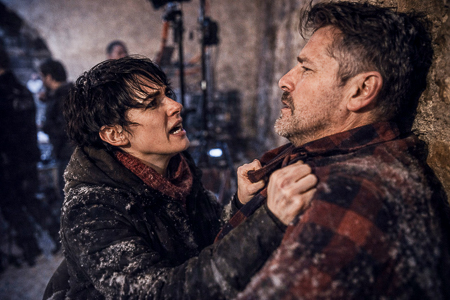
MACREADY goes pale.
MACREADY
Dead…? Who? How?
A second of silence. She lets it go. The technicians look at each other.
MACREADY regains his composure.
MACREADY
(Serious)
Did Nate record it? Tell me he recorded everything.
Angela Raw stares at him in horror. She turns away from him, pacing the room.
with their eyes.
ANGELA RAW
And how…? You're warm. You have light. A fireplace.
RAFA
There was a generator. It was easy. We got organized from day one.
ANGELA RAW relaxes.
ANGELA RAW
I need to charge my phone… I have one percent…
They offer her a cable. Angela Raw takes it without looking and charges her phone, without
She crouches in a corner, letting go of it. She keeps staring at Macready.
ANGELA RAW
You abandoned us. You forgot about us.
MACREADY
No. I went to get help!
ANGELA RAW
That's a lie. All you care about is saving your own skin.
MACREADY stands up.
MACREADY
We'll be back tomorrow. This deserves to be told properly.
ANGELA RAW
No. If anyone's going to tell what happened, it's going to be me.
The technicians look at each other.
MACREADY
Get some rest. Tomorrow we won't be recording a show… we'll be recording history. And what
happens there… he will live forever.
ANGELA RAW looks at her mobile phone screen while it's charging. No signal.
ANGELA RAW
I understand that we still don't have internet, right?
Everyone turns to look at her. No one answers.
INT. PYRENEAN HOUSE / LIVING ROOM - NIGHT
SOLE and NATE are hugging on the sofa, wrapped together in a blanket.
There's activity under the blanket.
SOLE
Hey… come here. Let's take advantage of the fact that our friend is snoring…
Look at EYEWEAR, who is asleep on the floor, snoring, wrapped up in his
blanket. SOLE also looks at it, with suppressed disgust.
SOLE
He gives off a bad vibe. That guy's not right in the head.
SOLE thinks for a moment.
SOLE
Look, Nate… This guy isn't right in the head. If he wakes up and catches us asleep,
Maybe we won't tell tomorrow.
NATE gets a chill.
SOLE
That's why... I think you should be on duty tonight. I need to be there.
rested if we want to survive tomorrow.
NATE looks at her, uncertain.
NATE
Me, just…?
SOLE
If we both fall asleep… we might not live to tell the tale tomorrow.
A pause. NATE nods.
NATE
Okay. I'll stand guard.
Sole kisses him on the cheek.
SOLE
I knew I could trust you. Good night.
She curls up in the blanket, closes her eyes… but opens them again to
Look at the camera and smile. Then close them again.
In the darkness, EYEWATCHFUL opens his eyes, still snoring.
FADE TO BLACK
EXT. TECHNICAL TEAM HOUSE - DAWN
In the middle of the snowy landscape, the technical team's house appears clear.
The smoke coming out of the chimney.
The following sign appears over the image:
Outdoor Temperature: -5º
Indoor Temperature: 4º
INT. TECHNICAL TEAM HOUSE - DAWN
The technical team and MACREADY are getting ready to leave. The common room is a
A small hive of activity: backpacks open, walkie-talkies charging, thermoses full of
Coffee. Everyone is moving quickly: the morning smells of urgency. MACREADY,
Standing in the center, he gives orders.
MACREADY
Listen up, everyone. We're leaving in two hours. I'll be there first. I'll see what's going on. I'll take
The pulse. When I have the scenario clear… you come in.
ANGELA RAW
Really? Are you going to play the hero of something you haven't even seen?
MACREADY smiles.
MACREADY
Someone has to do it right.
ANGELA RAW
We should all go. There are people there. Scared. Out of control. Maybe...
They are doing harm.
MACREADY
We should all go now. There are people there. They're out of control. Maybe...
They are doing harm.
Rafa hands him his coat and a fully charged mobile phone.
RAFA
Full battery.
MACREADY
Thank you. You're number one.
RAFA smiles.
ÁNGELA RAW suddenly gets up.
ANGELA RAW
I'm going with you. I'm not going to stay here while you take the medal.
Suddenly, a sound: PIP, PIP, PIP. Different cell phones are ringing.
Notifications flashing one after another.
The technicians take out their mobile phones. The connection is back.
TECHNICIAN 1
I have a signal!
TECHNICIAN 2
I just got a message!
MACREADY raises his arms as if in prayer.
MACREADY
This is it! We can't wait a minute. I have to get there.
Before anyone else. Show the horror. Show the truth. This is going to explode.
Internet!
Angela Raw's phone vibrates in her pocket. She looks at the screen.
INCOMING MESSAGE: EX – “Can we talk?
ANGELA RAW takes a deep breath. MACREADY is already heading towards the door.
MACREADY
The hero's leaving! Rafa, you stay. Someone's gotta keep the fire going.
turned on.
Angela Raw hesitates for a second. She looks at her phone. She looks at MacReady. She looks at...
The phone is new. Angela Raw sends a voice message while...
MACREADY move away.
ANGELA RAW
(On the phone)
I can't right now. I'm in the middle of something really bad. If everything goes well… I'll…
called.
She puts her phone in her pocket and runs towards the door.
ANGELA RAW
Wait!
ANGELA RAW runs out of the house towards MACREADY.
INT. PYRENEAN HOUSE / LIVING ROOM - IN THE MORNING
The following sign appears over the image:
Outdoor Temperature: -5º
Indoor Temperature: 3º
INT. PYRENEAN HOUSE / LIVING ROOM - IN THE MORNING
EYEWATCHER paces around the table, murmuring.
OJOAVIZOR
(To himself)
They're among us. Plotting. They don't trust you. I know it. I know it.
I see.
SOLE and NATE watch him from the sofa, wrapped in blankets.
SOLE
(A NATE)
This guy has completely lost his mind.
NATE
Is he talking about us?
SOLE
Of all of them. Record it. This is pure gold.
NATE looks at her. SOLE strokes his arm and nods.
SOLE
Grab the camera.
Nate crawls across the floor to the camera. He picks it up and points it towards
WATCHFUL EYE. But it's not in the same place anymore. Look up and go to WATCHFUL EYE.
standing on the table and looking at him as if he were stalking prey.
OJOAVIZOR
Recording me…? You are two poisonous snakes. I have seen you. I hear you through the
evening.
Sole clutches the blanket to her chest. Nate takes a step back.
OJOAVIZOR
You want to catch me… but you can't. I'm always one step ahead.
WATCHFUL EYE runs across the table and jumps over NATE, who gets scared.
OJOAVIZOR disappears down the hallway.
NATE and SOLE look at each other.
SOLE
Well, that's it. The madman has decided to lock himself up.
NATE
What if… he comes out again?
INT. ROOM WATCHFUL - IN THE MORNING
The watchful eye enters and slams the door. Determined, he opens his nightstand and
He takes out the gun. He caresses it.
OJOAVIZOR
It's time to let the impatient one out.
INT. PYRENEAN HOUSE / LIVING ROOM - IN THE MORNING
SOLE and NATE are on the sofa.
SOLE
Where has he gone? Can you hear him?
NATE
No… and that's the worst part. I have a bad feeling.
WATCHFUL EYE appears at the end of the hallway, gun in hand. NATE records as
walk slowly straight towards him.
SOLE
This wasn't in the script…! Run!
Sole runs towards the kitchen. Nate backs away, trembling, without letting go
to record.
WATCHFUL EYE raises the gun in front of him.
NATE turns around and runs after SOLE.
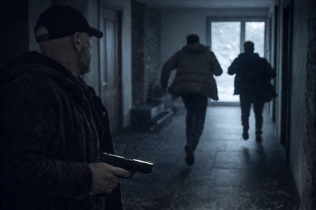
INT. PYRENEAN HOUSE / BASEMENT - IN THE MORNING
SOLE appears running and stumbles down the basement stairs,
shouting without looking back.
Sole reaches the back, pushes the door open, and closes it. She leans her back against the wall.
The wall. It breathes like a cornered animal.
KNOCKS on the door. SOLE opens her eyes.
NATE (OFF)
SUNSHINE! Open me, open me now!
SOLE hesitates for a moment. NATE keeps hitting.
WATCHFUL EYE starts to descend the basement stairs. NATE sees his feet
descend.
NATE
I'm too young to die!
Sole opens the door just enough for Nate to slip in, and closes it.
Immediately. They both lean against the door.
OJOAVIZOR reaches the door.
OJOAVIZOR
And the wolf huffed and puffed and blew the house down!
The watchful eye bangs hard on the door. The door shakes with each bang.
Charge. Sole clenches her teeth. Nate raises the camera to record.
SOLE
Help me, NATE! Help me! PUT DOWN THE FUCKING CAMERA AND HELP ME, DAMMIT!
NATE hesitates for half a second.
SOLE
NATE!
Nate leaves the camera on his work table. He runs to the door and
He pushes against her with his body.
OJOAVIZOR keeps banging on the door and SOLE and NATE are resisting.
And then… Silence.
SOLE and NATE look at each other.
SOLE
What is he doing? What is he doing?
NATE
I think he's trying to shoot.
A watchful eye points the gun at the door. He pulls the trigger. The gun doesn't
He fires. A metallic CLACK. Nothing happens. He tries it repeatedly.
The watchful eye peers down the gun barrel. He thinks for a moment and drops
the gun.
OJOAVIZOR
Everything is fake. The gun is fake, the snow is fake.
WATCHFUL goes upstairs.
OJOAVIZOR
You think I'm going to fall for your little game… Well, you're wrong!
Get out of here.
INT. PYRENEAN HOUSE / LIVING ROOM / ENTRANCE – IN THE MORNING
OJOAVIZOR advances down the corridor, gun in hand. Firm step.
OJOAVIZOR
(To himself)
From the beginning, I saw it clearly. I'm the only one awake. The only one who doesn't know.
Swallow this shit.
She stops in front of the hallway mirror. She stares at herself. She looks at the
gun and drops it.
Open the front door and leave, leaving the door open.
OJOAVIZOR
You're not going to fool me. No. I win today. I win today…
Her voice fades as she walks away.
EXT. MOUNTAIN - IN THE MORNING
MACREADY and ANGELA RAW advance through the snow. They walk too close together.
bumping shoulders.
MACREADY accelerates. ANGELA RAW does too. MACREADY takes a longer stride.
MACREADY accelerates even further. ANGELA RAW does the same.
Seen from afar, they appear tiny in a snowy forest.
INT. PYRENEAN HOUSE / BASEMENT - IN THE MORNING
SOLE and NATE are sitting on the floor against the door, still panting.
SOLE glances at him out of the corner of her eye.
SOLE
And you? When the hell did you plan on giving up the camera, Nate? When
what if he came in and blew our fucking heads off?
NATE takes a deep breath. He looks at her, hurt.
NATE
When you chose to run away and left me there, like a decoy. A
bait for the fucking psychopath!
SOLE
Don't talk nonsense. The gun didn't work!
NATE
But we didn't know!
NATE looks at her, truly hurt.
NATE
I thought… there was something real between us.
SOLE
Oh, Nate… You're adorable. It wasn't "something." It was just a fling. You're always looking for trouble.
have someone tell you what to do.
SOLE looks in her pockets for her phone but can't find it.
SOLE
Damn it! My phone. I left it upstairs. No time to cry.
Nate. We need to get out of here. We have to keep the show going.
NATE gets up too.
NATE
You're already off the show. I'll see you at Mercadona.
SOLE grabs a drum set from the table and throws it at NATE. BANG!
Nate staggers, dizzy. He runs towards her and rams into her with his full weight.
They fall to the ground. Nate's camera and mug fall to the ground. The mug becomes
smithereens.
NATE tries to strangle her. SOLE scratches him and kicks in self-defense.
Finally, she bites his neck, tearing off a piece of skin. NATE
He screams.
Sole grabs a pen from the floor and stabs Nate with it. She pulls him away and
He crawls away from him.
Nate grabs her ankle and pulls her towards him. Nate picks up a
A piece of a broken cup is thrown into Sole's leg. Sole howls in pain.
Both are bleeding, both are panting, frolicking on the ground. They crawl.
one towards the other, like two dying animals engaged in a final struggle
They fight. Face to face. They stop. Both rest their foreheads together, trembling.
They breathe the same air. For a second, they seem about to kiss.
NATE
I could have made you a star.
Sole caresses his face. Then her hand goes down… to search for a
screwdriver. He grabs it. They look at each other. Sole stabs him. Nate covers her.
mouth. SOLE continues stabbing him with the screwdriver. NATE positions himself.
about her.
Blood. Gasps. NATE's camera on the ground records the escena.
EXT. PYRENEAN HOUSE - MIDDAY
Angela Raw and MacReady arrive at the house. In front of the entrance,
Half-buried in snow are the bodies of Uncle Paco, Jose Fit, and La
DIVA, arranged almost in a row. MACREADY stops to look at the bodies.
He puts his hands to his mouth.
MACREADY
My God… My God, Paco… If only I had arrived earlier… if only… if only…
ANGELA RAW
We took them outside to preserve them.
MACREADY
Angela, please! This is HORRIBLE…
(Pause)
The audience is going to love it. Although YouTube might demonetize me.
INT. PYRENEAN HOUSE / ENTRANCE - MIDDAY
The door is open. Macready enters first. Angela Raw follows.
Cautiously. Close the door.
Silence.
ANGELA RAW
This is strange. Too quiet.
MACREADY
Nate! Nate, damn it! Where the fucking camera is?!
No response.
Angela Raw lowers her gaze. On the floor, next to the hall furniture: a
gun.
ANGELA RAW
Is that…?
MACREADY turns around. He sees her. They both look at each other.
MACREADY
What the hell happened in here…? This wasn't in the script…
Suddenly. LIGHT. The lights come on. The lamps flicker, the
The router beeps, the microwave emits a buzz, the refrigerator purrs.
Mobile phones are ringing. Notifications are arriving.
ANGELA RAW
The signal… has returned…
Macready watches his phone light up. Then he looks at the house. Then at Angela.
Smile slowly.
MACREADY
Perfect.
INT. PYRENEAN HOUSE / RECORDING SET - IN THE MORNING
MACREADY enters the room. You look at one of the monitors.
ANGELA RAW watches him from behind, with her mobile phone in her hand.
MACREADY sits down in an armchair.
MACREADY
Guys… I'm back. And I bring you the truth… the raw truth… What we've been through
Here… nobody… NOBODY… will tell you the story like I will.
MacReady gets up and turns on the cameras. He adjusts a spotlight, places a
microphone. And finally, press a button.
MACREADY
Two minutes and we're live. Angela… let me handle this. This requires…
charisma.
ANGELA RAW watches him with her mobile phone in her hand.
ANGELA RAW
And bullshit…
Turn on Instagram Live.
ANGELA RAW
What has happened in here, what we have experienced, you need to know…
Macready turns around upon hearing it and is petrified.
MACREADY
Are you… live?
ANGELA RAW shoves the phone in his face.
ANGELA RAW
People deserve to know the truth. Not your version.
Macready snatches the phone away with a swipe of his hand.
MACREADY
Don't even think about it! You're not going to steal MY moment! MY show! MY story!
MY people!
Angela Raw tries to get it back. He raises his arm, holding the phone.
aloft.
Pause the LIVE STREAM.
Angela Raw punches him in the stomach. Macready doubles over and she
They grab the phone. They struggle. Neither of them lets go.
MACREADY
If you open your mouth… I'll tell you about the AI. Your travels. Your jungle. That you haven't
Not even half a desert. All lies.
ANGELA RAW drops her phone.
MACREADY
Do you want the world to know?
ANGELA RAW
I'm not going to let you sell yourself as a savior…
MACREADY smiles at him.
MACREADY
Heroes are those who are counted as heroes. The rest… end up in the
snow… You can't stop me.
ANGELA RAW stares at him. Her expression changes.
ANGELA RAW
You son of a bitch! Over my dead body.
She presses her lips together and runs towards him. She charges at him. They both crash into a
table and fall to the floor.
ANGELA RAW looks for her phone on the floor.
MACREADY
You crazy bitch!
MACREADY tries to drown her with his bare hands.
Angela Raw grabs a microphone stand and hits Macready in the temple. Blood
It starts to sprout on Macready's face. Angela Raw sees it and is overwhelmed.
ANGELA RAW
Stop, please! Stop! This makes no sense.
MACREADY, stunned and furious, shoves her and she falls to the ground
He gasped for air. He coughed, crawled, and then saw the gun.
WATCHFUL EYE lying on the ground. ANGELA RAW crawls towards the gun.
Macready chases her, kicking. He grabs her legs and drags her away.
part of the room to another.
MACREADY
You're going to ruin everything! You can't stop me. You're not going to screw me over!
Special, darling!
ANGELA RAW crawls under the table for protection.
MACREADY
Angela, this is getting out of hand…
He tries to grab her ankle. Angela Raw emerges from under the table.
Direction to the GUN. MACREADY gets up and runs there. ANGELA RAW
He grabs the gun. Macready lunges at him. They both fall on top of each other.
another, without letting go of the weapon, struggling.
MACREADY
Give it to me, damn it! You don't have the balls to use it.
MACREADY is on top of ANGELA RAW, headbutts her and manages to take the
He pulls out a gun and points it at her. Angela Raw freezes in fear. Macready squeezes the
Trigger. Click. No shot. Click, click, click.
MACREADY looks at the gun with an idiotic face.
MACREADY
But what…? WHAT THE HELL IS THIS?
At that moment, the set's computer emits a sound. The central camera
It's LIVE.
Macready stands up and faces the camera. Angela Raw kicks him in the...
eggs that bend him. MACREADY falls to the ground screaming.
She snatches the gun from his hands. She gets on top of him.
ANGELA RAW
YOU ARE A FALSE PROPHET!
ANGELA RAW repeatedly hits him on the head with the butt of the gun,
like a hammer. Blood splatters.
The live stream is still recording. People are tuning in. Hearts and
Comments appear on the screen.
Macready's head ends up crushed against the ground. A thick puddle forms
form beneath it.
Silence.
ANGELA RAW, covered in blood, crawls across the floor until she reaches the
table where the microphone and main camera are located.
Her face emerges from behind the table, but it is no longer her face. It is not Angela.
RAW that we had seen.
She stares intently at the camera, her face contorted, her gaze clouded, the
suffocated breathing.
ANGELA RAW
To everyone who's connecting... Welcome. Now the
TRUE.
It's getting a little closer.
INT. PYRENEAN HOUSE / ENTRANCE - IN THE MORNING
A drop of blood falls. Then another. A bloodstain on the floor.
It runs from the basement door, through the entrance and the living room
until reaching the room prepared as a recording set.
ANGELA RAW (OFF)
You want the truth. You want all the blood. You want all of hell. You
I'll be waiting on my channel.
ANGELA RAW disconnects the live stream. And logs in with her account.
INT. PYRENEAN HOUSE / RECORDING SET - IN THE MORNING
Angela Raw looks up and sees Sole on the monitor. She moves forward from behind.
She walks awkwardly. In her hands she holds Nate's camera.
SOLE
Do you want to tell the truth?
ANGELA RAW turns slowly.
SOLE
Well, let's tell it.
SOLE advances. Each step leaves drops of blood on the set.
SOLE
Do you want fame, Angela? Do you want your version? Let's see together how the
You pushed off the roof.
ANGELA RAW
That's not how it was. It was an accident.
SOLE
Confess, you bitch...
ANGELA RAW shakes her head.
ANGELA RAW
It was an accident. I… I tried… She tried to push me. I… I just… She
slipped.
SOLE smiles. ANGELA RAW frowns.
SOLE
That… was exactly what I needed.
ANGELA RAW
I'm going to rip that fucking camera out of your hands.
SOLE
Well, come and get it.
Angela Raw dives onto Sole. Both stagger and collide with one of
the cameras, throwing it to the ground and breaking it into pieces.
The main camera goes live. Both are on the ground, struggling.
The number of viewers of the live stream starts to rise.
SOLE grabs ANGELA RAW by the cheeks, putting her fingers inside her
mouth. ANGELA RAW bites it.
SOLE
(Shouting)
Whore!
Angela Raw grabs her hair, pulling out a whole clump. They both roll.
Angela manages to get on top of him. She plunges her forearm into his throat.
SOLE, pushing, squeezing.
Sole kicks and screams. She tries to resist and pokes Angela in the eye with her thumb.
RAW, who screams while putting his hands to his face.
Sole gets up clumsily. She grabs a spotlight from the set and smashes it into her...
head. The lamp shatters into a thousand pieces. Angela falls to her knees,
Dazed. Blood drips down her forehead.
Sole grabs a tripod like it's a bat. She tries to hit Angela Raw.
But it dodges the blow. Missing the tripod strikes others.
lights that are hanging and sparks are popping out.
ANGELA RAW crawls backwards and finds a thick audio cable,
Long, sturdy. He wraps it around his hand, tightens it, and grips it like a
whip. And she begins to lash Sole. Each lash leaves a red mark on
SOLE's arms, back or face.
Sole roars in pain and rage. She grabs the cable and lunges at her. The two
They fall together, crashing into a pile of equipment. They tumble around in the
floor, scratching, biting, pulling hair, clumsily flailing and
desperate.
ANGELA RAW manages to pass the cable around SOLE's neck. She crosses it.
He pulls back with all his might. The sound of the cable tightening in
SOLE's neck: CRRRK-CRRRK-CRRRK.
SOLE strikes ANGELA RAW in the sides. She digs her nails into her.
cheeks, scratching her face and leaving a visible mark. ANGELA RAW clenches
And she tightens the cable. Sole begins to run out of air. Her tongue sticks out.
A trickle of saliva falls. His eyes glaze over.
SOLE grabs a piece of metal from the ground and stabs it into the ribs of
ANGELA RAW.
ANGELA RAW instantly drops the cable. SOLE, catching her breath, tries
He removed the cable from his neck, coughing up blood and tears.
Sole tries to unwind the cable from around her neck. Angela Raw gets up.
disoriented and bumps into MACREADY's "big panel" smiling at the camera.
Angela Raw grabs the large panel and throws it at Sole. Sole lifts the
view to see the panel fall.
SOLE is squashed under MACREADY's enormous face.
Silence. ANGELA RAW breathes heavily.
The studio is devastated. Broken panels. Ripped cables. Behind her
Sparks are flying. The camera is still live. She's looking at the camera.
EXT. PYRENEAN HOUSE - IN THE MORNING
The technical team arrives at the house.
INT. PYRENEAN HOUSE / RECORDING SET - IN THE MORNING
MACREADY's giant panel continues to crush SOLE's motionless body.
Angela Raw, with a bloody eye, like a boxer after
He fights 12 rounds, dragging a chair to stand in front of the camera.
He takes the lead and sits down. He grabs the microphone.
ANGELA RAW's subscriber count is starting to climb rapidly. ANGELA
RAW looks up to look at the camera.
ANGELA RAW
If you want the truth… give it a “Like”.
ANGELA RAW smiles proudly.
FADE TO BLACK
INT. TECHNICAL TEAM HOUSE - AFTERNOON
A steaming teapot. Rafa pours a cup of tea and gives it to Ojoavizor.
He gratefully accepts it, sitting on the sofa. Rafa sits next to him.
RAFA
Here, this will warm you up.
OJOAVIZOR gratefully accepts the cup.
RAFA
Do you want to play? Do you know how it works?
RAFA offers the dice to OJOAVIZOR, who takes a sip and picks them up.
EYE-WATCHER looks up. Looks directly at the camera. Smiles.
OJOAVIZOR
I learn quickly. Let's play.
OJOAVIZOR blows on the dice and throws them onto the table. Dice sound.